Prerequisites
1 Introduction to the Tidyverse
Placeholder
1.1 About This Course
1.2 Tidy Data
1.2.1 Data Terminology
1.2.2 Principles of Tidy Data
1.2.3 Tidy Data Are Rectangular
1.2.4 Tidy Data Benefits
1.2.5 Rules for Storing Tidy Data
1.2.5.1 Be consistent
1.2.5.2 Choose good names for things
1.2.5.3 Write dates as YYYY-MM-DD
1.2.5.4 No empty cells
1.2.5.5 Put just one thing in a cell
1.2.5.6 Don’t use font color or highlighting as data
1.2.5.7 Save the data as plain text files
1.2.5.8 Summary
1.3 From Non-Tidy –> Tidy
1.3.1 Common problems with messy datasets
1.3.2 Examples of untidy data
1.3.2.1 Examples from Data Organization in Spreadsheets
1.3.3 Tidying untidy data
1.4 The Data Science Life Cycle
1.5 The Tidyverse Ecosystem
1.5.1 Reading Data into R
1.5.1.1 tibble
1.5.1.2 readr
1.5.1.3 googlesheets4
1.5.1.4 readxl
1.5.1.5 googledrive
1.5.1.6 haven
1.5.1.7 jsonlite & xml2
1.5.1.8 rvest
1.5.1.9 httr
1.5.2 Data Tidying
1.5.2.1 dplyr
1.5.2.2 tidyr
1.5.2.3 janitor
1.5.2.4 forcats
1.5.2.5 stringr
1.5.2.6 lubridate
1.5.2.7 glue
1.5.2.8 skimr
1.5.2.9 tidytext
1.5.2.10 purrr
1.5.3 Data Visualization
1.5.3.1 ggplot2
1.5.3.2 kableExtra
1.5.3.3 ggrepel
1.5.3.4 cowplot
1.5.3.5 patchwork
1.5.3.6 gganimate
1.5.4 Data Modeling
1.5.4.1 The tidymodels ecosystem
1.5.4.2 Inferential packages: broom and infer
1.5.4.3 tidyverts: tsibble, feasts, and fable
1.6 Data Science Project Organization
1.6.1 RStudio Projects
1.6.2 File Paths
1.6.2.1 Relative Paths
1.6.2.2 Absolute Paths
1.6.2.3 Path Summary
1.6.3 The here package
1.6.3.1 Setting your project directory
1.6.3.2 Get files paths using here()
1.6.3.3 Save and load files using here()
1.6.3.4 Where you should use this
1.6.3.5 The utility of the here package
1.6.4 File Naming
1.6.4.1 Good File Names
1.6.4.2 Machine readable files
1.6.4.3 Human readable files
1.6.4.4 Be nicely ordered
1.6.5 Project Template: Everything In Its Place
1.7 Data Science Workflows
1.8 Case Studies
1.8.1 Case Study #1: Health Expenditures
1.8.1.1 Data: Healthcare
1.8.2 Case Study #2: Firearms
1.8.2.1 Question
1.8.2.2 Data
2 Importing Data in the Tidyverse
Placeholder
2.1 About This Course
2.2 Tibbles
2.2.1 How tibbles differ from data.frame
2.2.2 Creating a tibble
2.2.2.1 as_tibble()
2.2.2.2 tibble()
2.2.3 Subsetting
2.3 Spreadsheets
2.3.1 Excel files
2.3.1.1 Reading Excel files into R
2.3.2 Google Sheets
2.3.2.1 The googlesheets4 package
2.3.2.1.1 Getting Started with googlesheets4
2.3.2.1.3 Reading data in using googlesheets:gs_read()
2.4 CSVs
2.4.1 Downloading CSV files
2.4.2 Reading CSVs into R
2.5 TSVs
2.5.1 Reading TSVs into R
2.6 Delimited Files
2.6.1 Reading Delimited Files into R
2.7 Exporting Data from R
2.8 JSON
2.9 XML
2.10 Databases
2.10.1 Relational Data
2.10.1.1 Why relational data?
2.10.2 Relational Databases: SQL
2.10.3 Connecting to Databases: RSQLite
2.10.4 Working with Relational Data: dplyr & dbplyr
2.10.5 Mutating Joins
2.10.5.1 Inner Join
2.10.5.2 Left Join
2.10.5.3 Right Join
2.10.5.4 Full Join
2.10.5.5 Mutating Joins Summary
2.10.6 Filtering Joins
2.10.7 How to Connect to a Database Online
2.11 Web Scraping
2.11.1 rvest Basics
2.11.2 SelectorGadget
2.11.3 Web Scraping Example
2.11.3.1 Using SelectorGadget
2.11.3.2 Using rvest
2.11.4 A final note: SelectorGadget
2.12 APIs
2.12.1 Getting Data: httr
2.12.2 Example 1: GitHub’s API
2.12.2.1 API Endpoint
2.12.2.2 API request: GET()
2.12.2.3 API response: content()
2.12.3 Example 2: Obtaining a CSV
2.12.4 read_csv() from a URL
2.12.5 API keys
2.13 Foreign Formats
2.13.1 haven
2.14 Images
2.14.0.1 Reading Images in R
2.15 googledrive
2.16 Case Studies
2.16.1 Case Study #1: Health Expenditures
2.16.1.1 Healthcare Coverage Data
2.16.1.2 Healthcare Spending Data
2.16.2 Case Study #2: Firearms
2.16.2.1 Census Data
2.16.2.2 Counted Data
2.16.2.3 Suicide Data
2.16.2.4 Brady Data
2.16.2.5 Crime Data
2.16.2.6 Land Area Data
2.16.2.7 Unemployment Data
3 Wrangling Data in the Tidyverse
Placeholder
3.1 About This Course
3.2 Tidy Data Review
3.3 Reshaping Data
3.3.1 Wide Data
3.3.2 Long Data
3.3.3 Reshaping the Data
3.3.3.1 tidyr
3.3.3.1.1 pivot_longer()
3.3.3.1.2 pivot_wider()
3.4 Data Wrangling
3.4.1 R Packages
3.4.1.1 dplyr
3.4.1.2 tidyr
3.4.1.3 janitor
3.4.1.4 skimr
3.4.2 The Pipe Operator
3.4.3 Filtering Data
3.4.3.1 Filtering Rows
3.4.3.2 Selecting Columns
3.4.3.3 Renaming Columns
3.4.4 Reordering
3.4.4.1 Reordering Columns
3.4.4.2 Reordering Rows
3.4.5 Creating New Columns
3.4.6 Separating Columns
3.4.7 Merging Columns
3.4.8 Cleaning Column Names
3.4.9 Combining Data Across Data Frames
3.4.10 Grouping Data
3.4.10.1 group_by()
3.4.11 Summarizing Data
3.4.11.1 summarize()
3.4.11.2 tabyl()
3.4.11.3 tally()
3.4.11.4 add_tally()
3.4.11.5 count()
3.4.11.6 add_count()
3.4.11.7 get_dupes()
3.4.11.8 skim()
3.4.11.9 summary()
3.4.12 Operations Across Columns
3.5 Working With Factors
3.5.1 Factor Review
3.5.2 Manually Changing the Labels of Factor Levels: fct_relevel()
3.5.3 Keeping the Order of the Factor Levels: fct_inorder()
3.5.4 Advanced Factoring
3.5.5 Re-ordering Factor Levels by Frequency: fct_infreq()
3.5.6 Reversing Order Levels: fct_rev()
3.5.7 Re-ordering Factor Levels by Another Variable: fct_reorder()
3.5.8 Combining Several Levels into One: fct_recode()
3.5.9 Converting Numeric Levels to Factors: ifelse() + factor()
3.6 Working With Dates and Times
3.6.1 Dates and Times Basics
3.6.2 Creating Dates and Date-Time Objects
3.6.2.1 From strings
3.6.2.2 From individual parts
3.6.3 Working with Dates
3.6.3.1 Getting components of dates
3.6.4 Time Spans
3.7 Working With Strings
3.7.1 stringr
3.7.1.1 Available functions
3.7.2 String Basics
3.7.2.1 String length
3.7.2.2 Combining strings: str_c()
3.7.2.3 Subsetting strings: str_sub()
3.7.2.4 String sorting: str_sort()
3.7.3 Regular Expressions
3.7.3.1 Anchors
3.7.3.2 Show matches: str_view()
3.7.3.3 Count matches: str_count()
3.7.3.4 Detect matches: str_detect()
3.7.3.5 Subset matches: str_subset()
3.7.3.6 Extract matches: str_extract()
3.7.3.7 Replace matches: str_replace()
3.7.3.8 Common regular expressions
3.7.3.8.1 Searching for characters
3.7.3.8.2 Searching for anything other than a set of characters
3.7.3.8.3 Search for digits
3.7.3.8.4 Search for whitespace
3.7.3.8.5 Identify any character (except newline)
3.7.3.9 Repetition within regular expressions
3.7.3.9.1 Examples of repetition within regular expressions
3.7.4 glue
3.8 Working With Text
3.8.1 Tidy Text Format
3.8.1.1 Tokenization
3.8.2 Sentiment Analysis
3.8.3 Word and Document Frequency
3.9 Functional Programming
3.9.1 For Loops vs. Functionals
3.9.1.1 Copy + Paste Approach
3.9.1.2 For Loop Approach
3.9.1.3 Function Approach
3.9.1.4 purrr Approach
3.9.2 map Functions
3.9.3 Multiple Vectors
3.9.3.1 map2
3.9.3.2 pmap
3.9.4 Anonymous Functions
3.10 Exploratory Data Analysis
3.10.1 General Principles of EDA
3.10.2 Analyzing JSON in R
3.10.3 Analyzing XML in R
3.11 Case Studies
3.11.1 Case Study #1: Health Expenditures
3.11.1.1 Healthcare Coverage Data
3.11.1.1.1 States Data
3.11.1.2 Healthcare Spending Data
3.11.1.3 Join the Data
3.11.2 Case Study #2: Firearms
3.11.2.1 Census Data
3.11.2.2 Violent Crime
3.11.2.3 Brady Scores
3.11.2.4 The Counted Fatal Shootings
3.11.2.5 Unemployment Data
3.11.2.6 Population Density: 2015
3.11.2.7 Firearm Ownership
4 Visualizing Data in the Tidyverse
4.1 About This Course
Data visualization is a critical part of any data science project. Once data have been imported and wrangled into place, visualizing your data can help you get a handle on what’s going on in the dataset. Similarly, once you’ve completed your analysis and are ready to present your findings, data visualizations are a highly effective way to communicate your results to others. In this course we will cover what data visualization is and define some of the basic types of data visualizations.
In this course you will learn about the ggplot2 R package, a powerful set of tools for making stunning data graphics that has become the industry standard. You will learn about different types of plots, how to construct effect plots, and what makes for a successful or unsuccessful visualization.
In this specialization we assume familiarity with the R programming language. If you are not yet familiar with R, we suggest you first complete R Programming before returning to complete this course.
4.2 Data Visualization Background
At its core, the term ‘data visualization’ refers to any visual display of data that helps us understand the underlying data better. This can be a plot or figure of some sort or a table that summarizes the data. Generally, there are a few characteristics of all good plots.
4.2.1 General Features of Plots
Good plots have a number of features. While not exhaustive, good plots have:
- Clearly-labeled axes.
- Text that are large enough to see.
- Axes that are not misleading.
- Data that are displayed appropriately considering the type of data you have.
More specifically, however, there are two general approaches to data visualization: exploratory plots and explanatory plots.
4.2.1.1 Exploratory Plots
These are data displays to help you better understand and discover hidden patterns in the data you’re working with. These won’t be the prettiest plots, but they will be incredibly helpful. Exploratory visualizations have a number of general characteristics:
- They are made quickly.
- You’ll make a large number of them.
- The axes and legends are cleaned up.
Below we have a graph where the axes are labeled and general pattern can be determined. This is a great example of an exploratory plot. It lets you the analyst know what’s going on in your data, but it isn’t yet ready for a big presentation.
Exploratory Plot
As you’re trying to understand the data you have on hand, you’ll likely make a lot of plots and tables just to figure out to explore and understand the data. Because there are a lot of them and they’re for your use (rather than for communicating with others), you don’t have to spend all your time making them perfect. But, you do have to spend enough time to make sure that you’re drawing the right conclusions from this. Thus, you don’t have to spend a long time considering what colors are perfect on these, but you do want to make sure your axes are not cut off.
Other Exploratory Plotting Examples: Map of Reddit Air Quality Data
4.2.1.2 Explanatory Plots
These are data displays that aim to communicate insights to others. These are plots that you spend a lot of time making sure they’re easily interpretable by an audience. General characteristics of explanatory plots:
- They take a while to make.
- There are only a few of these for each project.
- You’ve spent a lot of time making sure the colors, labels, and sizes are all perfect for your needs.
Here we see an improvement upon the exploratory plot we looked at previously. Here, the axis labels are more descriptive. All of the text is larger. The legend has been moved onto the plot. The points on the plot are larger. And, there is a title. All of these changes help to improve the plot, making it an explanatory plot that would be presentation-ready.
Explanatory Plots
Explanatory plots are made after you’ve done an analysis and once you really understand the data you have. The goal of these plots is to communicate your findings clearly to others. To do so, you want to make sure these plots are made carefully - the axis labels should all be clear, the labels should all be large enough to read, the colors should all be carefully chosen, etc.. As this takes times and because you do not want to overwhelm your audience, you only want to have a few of these for each project. We often refer to these as “publication ready” plots. These are the plots that would make it into an article at the New York Times or in your presentation to your bosses.
Other Explanatory Plotting Examples:
4.3 Plot Types
Above we saw data displayed as both an exploratory plot and an explanatory plot. That plot was an example of a scatterplot. However, there are many types of plots that are helpful. We’ll discuss a few basic ones below and will include links to a few galleries where you can get a sense of the many different types of plots out there.
To do this, we’ll use the “Davis” dataset of the carData package which includes, height and weight information for 200 people.
To use this data first make sure the carData package is installed and load it.
Dataset
4.3.1 Histogram
Histograms are helpful when you want to better understand what values you have in your dataset for a single set of numbers. For example, if you had a dataset with information about many people, you may want to know how tall the people in your dataset are. To quickly visualize this, you could use a histogram. Histograms let you know what range of values you have in your dataset. For example, below you can see that in this dataset, the height values range from around 50 to around 200 cm. The shape of the histogram also gives you information about the individuals in your dataset. The number of people at each height are also counted. So, the tallest bars show that there are about 40 people in the dataset whose height is between 165 and 170 cm. Finally, you can quickly tell, at a glance that most people in this dataset are at least 150 cm tall, but that there is at least one individually whose reported height is much lower.
Histogram
4.3.2 Densityplot
Densityplots are smoothed versions of histograms, visualizing the distribution of a continuous variable. These plots effectively visualize the distribution shape and are, unlike histograms, are not sensitive to the number of bins chosen for visualization.
Densityplot
4.3.3 Scatterplot
Scatterplots are helpful when you have numerical values for two different pieces of information and you want to understand the relationship between those pieces of information. Here, each dot represents a different person in the dataset. The dot’s position on the graph represents that individual’s height and weight. Overall, in this dataset, we can see that, in general, the more someone weighs, the taller they are. Scatterplots, therefore help us at a glance better understand the relationship between two sets of numbers.
Scatter Plot
4.3.4 Barplot
When you only have a single categorical variable that you want broken down and quantified by category, a barplot will be ideal. For example if you wanted to look at how many females and how many males you have in your dataset, you could use a barplot. The comparison in heights between bars clearly demonstrates that there are more females in this dataset than males.
Barplot
4.3.4.1 Grouped Barplot
Grouped barplots, like simple barplots, demonstrate the counts for a group; however, they break this down by an additional categorical variable. For example, here we see the number of individuals within each % category along the x-axis. But, these data are further broken down by gender (an additional categorical variable). Comparisons between bars that are side-by-side are made most easily by our visual system. So, it’s important to ensure that the bars you want viewers to be able to compare most easily are next to one another in this plot type.
Grouped Barplot
4.3.4.2 Stacked Barplot
Another common variation on barplots are stacked barplots. Stacked barplots take the information from a grouped barplot but stacks them on top of one another. This is most helpful when the bars add up to 100%, such as in a survey response where you’re measuring percent of respondents within each category. Otherwise, it can be hard to compare between the groups within each bar.
Stacked Barplot
4.3.5 Boxplot
Boxplots also summarize numerical values across a category; however, instead of just comparing the heights of the bar, they give us an idea of the range of values that each category can take. For example, if we wanted to compare the heights of men to the heights of women, we could do that with a boxplot.
Boxplot
To interpret a boxplot, there are a few places where we’ll want to focus our attention. For each category, the horizontal line through the middle of the box corresponds to the median value for that group. So, here, we can say that the median, or most typical height for females is about 165 cm. For males, this value is higher, just under 180 cm. Outside of the colored boxes, there are dashed lines. The ends of these lines correspond to the typical range of values. Here, we can see that females tend to have heights between 150 and 180cm. Lastly, when individuals have values outside the typical range, a boxplot will show these individuals as circles. These circles are referred to as outliers.
4.3.6 Line Plots
The final type of basic plot we’ll discuss here are line plots. Line plots are most effective at showing a quantitative trend over time.
Line Plot
4.3.6.1 Resources to look at these and other types of plots:
4.4 Making Good Plots
The goal of data visualization in data analysis is to improve understanding of the data. As mentioned in the last lesson, this could mean improving our own understanding of the data or using visualization to improve someone else’s understanding of the data.
We discussed some general characteristics and basic types of plots in the last lesson, but here we will step through a number of general tips for making good plots.
When generating exploratory or explanatory plots, you’ll want to ensure information being displayed is being done so accurately and in a away that best reflects the reality within the dataset. Here, we provide a number of tips to keep in mind when generating plots.
4.4.1 Choose the Right Type of Plot
If your goal is to allow the viewer to compare values across groups, pie charts should largely be avoided. This is because it’s easier for the human eye to differentiate between bar heights than it is between similarly-sized slices of a pie. Thinking about the best way to visualize your data before making the plot is an important step in the process of data visualization.

Choose an appropriate plot for the data you’re visualizing.
4.4.2 Be Mindful When Choosing Colors
Choosing colors that work for the story you’re trying to convey with your visualization is important. Avoiding colors that are hard to see on a screen or when projected, such as pastels, is a good idea. Additionally, red-green color blindness is common and leads to difficulty in distinguishing reds from greens. Simply avoiding making comparisons between these two colors is a good first step when visualizing data.
Choosing appropriate colors for visualizations is important
Beyond red-green color blindness, there is an entire group of experts out there in color theory.To learn more about available color palettes in R or to read more from a pro named Lisa Charlotte Rost talking about color choices in data visualization, feel free to read more.
4.4.3 Label the Axes
Whether you’re making an exploratory or explanatory visualization, labeled axes are a must. They help tell the story of the figure. Making sure the axes are clearly labeled is also important. Rather than labeling the graph below with “h” and “g,” we chose the labels “height” and “gender,” making it clear to the viewer exactly what is being plotted.

Having descriptive labels on your axes is critical
4.4.4 Make Sure the Text is Readable
Often text on plots is too small for viewers to read. By being mindful of the size of the text on your axes, in your legend, and used for your labels, your visualizations will be greatly improved.

On the right, we see that the text is easily readable
4.4.5 Make Sure the Numbers Add Up
When you’re making a plot that should sum to 100, make sure that it in fact does. Taking a look at visualizations after you make them to ensure that they make sense is an important part of the data visualization process.

At left, the pieces of the pie only add up to 95%. On the right, this error has been fixed and the pieces add up to 100%
4.4.6 Make Sure the Numbers and Plots Make Sense Together
Another common error is having labels that don’t reflect the underlying graphic. For example, here, we can see on the left that the turquoise piece is more than half the graph, and thus the label 45% must be incorrect. At right, we see that the labels match what we see in the figure.

Checking to make sure the numbers and plot make sense together is important
4.4.7 Make Comparisons Easy on Viewers
There are many ways in which you can make comparisons easier on the viewer. For example, avoiding unnecessary whitespace between the bars on your graph can help viewers make comparisons between the bars on the barplot.

At left, there is extra white space between the bars of the plot that should be removed. On the right, we see an improved plot
4.4.8 Use y-axes That Start at Zero
Often, in an attempt to make differences between groups look larger than they are, y-axis will be started at a value other than zero. This is misleading. Y-axis for numerical information should start at zero.
At left, the differences between the vars appears larger than on the right; however, this is just because the y-axis starts at 200. The proper way to start this graph is to start the y-axis at 0.
4.4.9 Keep It Simple
The goal of data visualization is to improve understanding of data. Sometimes complicated visualizations cannot be avoided; however, when possible, keep it simple.
Here, the graphic on the left does not immediately convey a main point. It’s hard to interpret what each point means or what the story of this graphic is supposed to be. In contrast, the graphics on the right are simpler and each show a more obvious story. Make sure that your main point comes through:
Main point unclear
Similarly, the intention of your graphic should never be to mislead or confuse. Be sure that your data visualizations improve viewers’ understanding. Using unusual axes limits or point sizes, or using vague labels can make plots misleading. This plot creates an effective exclamation mark shape which is fun, but it is no longer clear what points correspond to what species. Furthermore, this plot makes it look like petal width is not very distinguishable across the different species (particularly for versicolor and virginica), which is the opposite of what the previous petal plot conveyed.
Confusion is conveyed here
4.5 Plot Generation Process
Having discussed some general guidelines, there are a number of questions you should ask yourself before making a plot. These have been nicely laid out in a blog post from the wonderful team at Chartable, Datawrapper’s blog and we will summarize them here. The post argues that there are three main questions you should ask any time you create a visual display of your data. We will discuss these three questions below
4.5.1 What’s your point?
Whenever you have data you’re trying to plot, think about what you’re actually trying to show. Once you’ve taken a look at your data, a good title for the plot can be helpful. Your title should tell viewers what they’ll see when they look at the plot.
4.5.2 How can you emphasize your point in your chart?
We talked about it in the last lesson, but an incredibly important decision is choosing an appropriate chart for the type of data you have. In the next section of this lesson, we’ll discuss what type of data are appropriate for each type of plot in R; however, for now, we’ll just focus on an iPhone data example. With this example, we’ll discuss that you can emphasize your point by:
- Adding data
- Highlighting data with color
- Annotating your plot
4.5.2.1 Adding data
In any plot that makes a specific claim, it usually important to show additional data as a reference for comparison. For example, if you were making a plot of that suggests that the iPhone has been Apple’s most successful product, it would be helpful for the plot to compare iPhone sales with other Apple products, say, the iPad or the iPod. By adding data about other Apple products over time, we can visualize just how successful the iPhone has been compared to other products.
4.5.2.2 Highlighting data with color
Colors help direct viewers’ eyes to the most important parts of the figure. Colors tell your readers where to focus their attention. Grays help to tell viewers where to focus less of their attention, while other colors help to highlight the point your trying to make.
4.5.2.3 Annotate your plot
By highlighting parts of your plot with arrows or text on your plot, you can further draw viewers’ attention to certain part of the plot. These are often details that are unnecessary in exploratory plots, where the goal is just to better understand the data, but are very helpful in explanatory plots, when you’re trying to draw conclusions from the plot.
4.5.3 What Does Your Final Chart Show?
A plot title should first tell viewers what they would see in the plot. The second step is to show them with the plot. The third step is to make it extra clear to viewers what they should be seeing with descriptions, annotations, and legends. You explain to viewers what they should be seeing in the plot and the source of your data. Again, these are important pieces of creating a complete explanatory plot, but are not all necessary when making exploratory plots.
4.5.3.1 Write precise descriptions
Whether it’s a figure legend at the bottom of your plot, a subtitle explaining what data are plotted, or clear axes labels, text describing clearly what’s going on in your plot is important. Be sure that viewers are able to easily determine what each line or point on a plot represents.
4.5.3.2 Add a source
When finalizing an explanatory plot, be sure to source your data. It’s always best for readers to know where you obtained your data and what data are being used to create your plot. Transparency is important.
4.6 ggplot2: Basics
R was initially developed for statisticians, who often are interested in generating plots or figures to visualize their data. As such, a few basic plotting features were built in when R was first developed. These are all still available; however, over time, a new approach to graphing in R was developed. This new approach implemented what is known as the grammar of graphics, which allows you to develop elegant graphs flexibly in R. Making plots with this set of rules requires the R package ggplot2. This package is a core package in the tidyverse. So as along as the tidyverse has been loaded, you’re ready to get started.
4.6.1 ggplot2 Background
The grammar of graphics implemented in ggplot2 is based on the idea that you can build any plot as long as you have a few pieces of information. To start building plots in ggplot2, we’ll need some data and we’ll need to know the type of plot we want to make. The type of plot you want to make in ggplot2 is referred to as a geom. This will get us started, but the idea behind ggplot2 is that every new concept we introduce will be layered on top of the information you’ve already learned. In this way, ggplot2 is layered - layers of information add on top of each other as you build your graph. In code written to generate a ggplot2 figure, you will see each line is separated by a plus sign (+). Think of each line as a different layer of the graph. We’re simply adding one layer on top of the previous layers to generate the graph. You’ll see exactly what we mean by this throughout each section in this lesson.
To get started, we’ll start with the two basics (data and a geom) and build additional layers from there.
As we get started plotting in ggplot2, plots will take the following general form:
When using ggplot2 to generate figures, you will always begin by calling the ggplot() function. You’ll then specify your dataset within the ggplot() function. Then, before making your plot you will also have to specify what geom type you’re interested in plotting. We’ll focus on a few basic geoms in the next section and give examples of each plot type (geom), but for now we’ll just work with a single geom: geom_point.
geom_point is most helpful for creating scatterplots. As a reminder from an earlier lesson, scatterplots are useful when you’re looking at the relationship between two numeric variables. Within geom you will specify the arguments needed to tell ggplot2 how you want your plot to look.
You will map your variables using the aesthetic argument aes. We’ll walk through examples below to make all of this clear. However, get comfortable with the overall look of the code now.
4.6.2 Example Dataset: diamonds
To build your first plot in ggplot2 we’ll make use of the fact that there are some datasets already available in R. One frequently-used dataset is known as diamonds. This dataset contains prices and other attributes of 53,940 diamonds, with each row containing information about a different diamond. If you look at the first few rows of data, you can get an idea of what data are included in this dataset.
## # A tibble: 53,940 x 10
## carat cut color clarity depth table price x y z
## <dbl> <ord> <ord> <ord> <dbl> <dbl> <int> <dbl> <dbl> <dbl>
## 1 0.23 Ideal E SI2 61.5 55 326 3.95 3.98 2.43
## 2 0.21 Premium E SI1 59.8 61 326 3.89 3.84 2.31
## 3 0.23 Good E VS1 56.9 65 327 4.05 4.07 2.31
## 4 0.290 Premium I VS2 62.4 58 334 4.2 4.23 2.63
## 5 0.31 Good J SI2 63.3 58 335 4.34 4.35 2.75
## 6 0.24 Very Good J VVS2 62.8 57 336 3.94 3.96 2.48
## 7 0.24 Very Good I VVS1 62.3 57 336 3.95 3.98 2.47
## 8 0.26 Very Good H SI1 61.9 55 337 4.07 4.11 2.53
## 9 0.22 Fair E VS2 65.1 61 337 3.87 3.78 2.49
## 10 0.23 Very Good H VS1 59.4 61 338 4 4.05 2.39
## # … with 53,930 more rowsFirst 12 rows of diamonds dataset
Here you see a lot of numbers and can get an idea of what data are available in this dataset. For example, in looking at the column names across the top, you can see that we have information about how many carats each diamond is (carat), some information on the quality of the diamond cut (cut), the color of the diamond from J (worst) to D (best) (color), along with a number of other pieces of information about each diamond.
We will use this dataset to better understand how to generate plots in R, using ggplot2.
4.6.3 Scatterplots: geom_point()
In ggplot2 we specify these by defining x and y within the aes() argument. The x argument defines which variable will be along the bottom of the plot. The y refers to which variable will be along the left side of the plot. If we wanted to understand the relationship between the number of carats in a diamond and that diamond’s price, we may do the following:
# generate scatterplot with geom_point()
ggplot(data = diamonds) +
geom_point(mapping = aes(x = carat, y = price))
diamonds scatterplot
In this plot, we see that, in general, the larger the diamond is (or the more carats it has), the more expensive the diamond is (price), which is probably what we would have expected. However, now, we have a plot that definitively supports this conclusion!
4.6.4 Aesthetics
What if we wanted to alter the size, color or shape of the points? Probably unsurprisingly, these can all be changed within the aesthetics argument. After all, something’s aesthetic refers to how something looks. Thus, if you want to change the look of your graph, you’ll want to play around with the plot’s aesthetics.
In fact, in the plots above you’ll notice that we specified what should be on the x and y axis within the aes() call. These are aesthetic mappings too! We were telling ggplot2 what to put on each axis, which will clearly affect how the plot looks, so it makes sense that these calls have to occur within aes(). Additionally now, we’ll focus on arguments within aes() that change how the points on the plot look.
4.6.4.1 Point color
In the scatterplot we just generated, we saw that there was a relationship between carat and price, such that the more carats a diamond has, generally, the higher the price. But, it’s not a perfectly linear trend. What we mean by that is that not all diamonds that were 2 carats were exactly the same price. And, not all 3 carat diamonds were exactly the same price. What if we were interested in finding out a little bit more about why this is the case?
Well, we could look at the clarity of the diamonds to see whether or not that affects the price of the diamonds? To add clarity to our plot, we could change the color of our points to differ based on clarity:
# adjusting color within aes
ggplot(data = diamonds) +
geom_point(mapping = aes(x = carat, y = price, color = clarity))
changing point colors helps us better understand the data
Here, we see that not only are the points now colored by clarity, ggplot2 has also automatically added a legend for us with the various classes and their corresponding point color.
The Help pages of the diamonds dataset (accessed using ?diamonds) state that clarity is “a measurement of how clear the diamond is.” The documentation also tells us that I1 is the worst clarity and IF is the best (Full scale: I1, SI1, SI2, VS1, VS2, VVS1, VVS2, IF). This makes sense with what we see in the plot. Small (<1 carat) diamonds that have the best clarity level (IF) are some of the most expensive diamonds. While, relatively large diamonds (diamonds between 2 and 3 carats) of the lowest clarity (I1) tend to cost less.
By coloring our points by a different variable in the dataset, we now understand our dataset better. This is one of the goals of data visualization! And, specifically, what we’re doing here in ggplot2 is known as mapping a variable to an aesthetic. We took another variable in the dataset, mapped it to a color, and then put those colors on the points in the plot. Well, we only told ggplot2 what variable to map. It took care of the rest!
Of course, we can also manually specify the colors of the points on our graph; however, manually specifying the colors of points happens outside of the aes() call. This is because ggplot2 does not have to go through the process of mapping the variable to an aesthetic (color in this case). In the code here, ggplot2 doesn’t have to go through the trouble of figuring out which level of the variable is going to be which color on the plot (the mapping to the aesthetic part of the process). Instead, it just colors every point red. Thus, manually specifying the color of your points happens outside of aes():
# manually control color point outside aes
ggplot(data = diamonds) +
geom_point(mapping = aes(x = carat, y = price), color = "red") 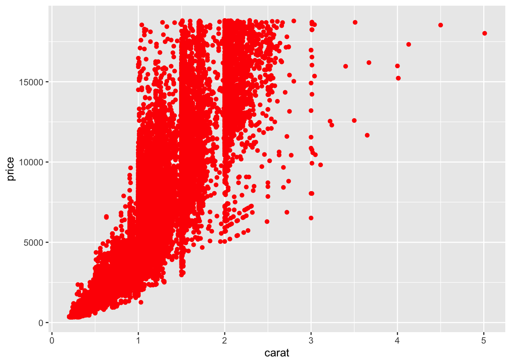
manually specifying point color occurs outside of aes()
4.6.4.2 Point size
As above, we can change the point size by mapping another variable to the size argument within aes:
# adjust point size within aes
ggplot(data = diamonds) +
geom_point(mapping = aes(x = carat, y = price, size = clarity))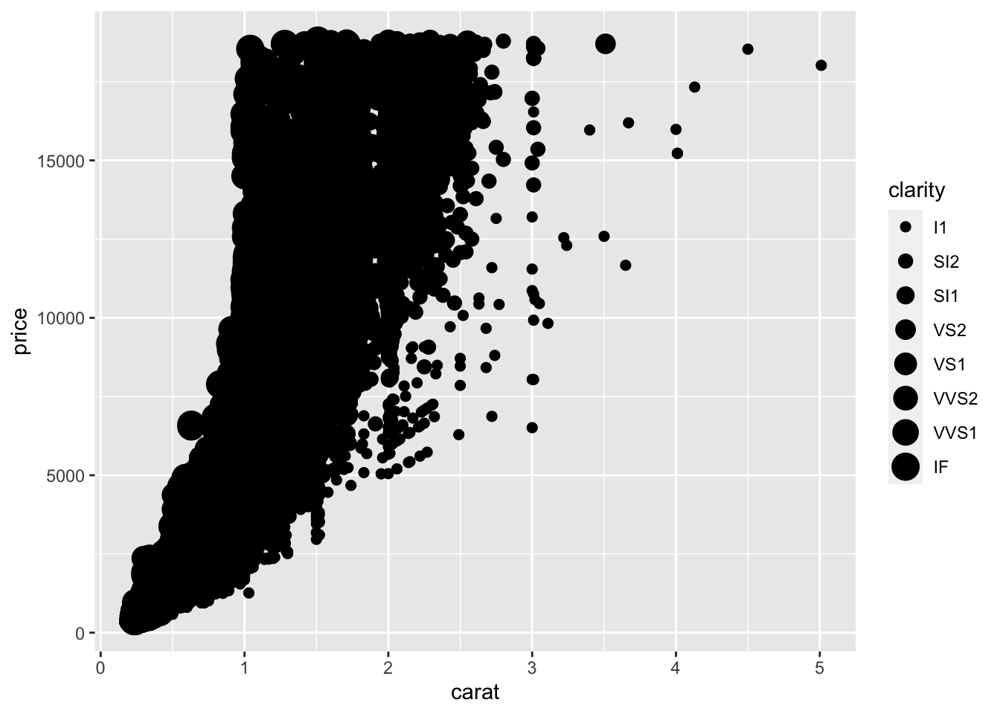
mapping to size changes point size on plot
As above, ggplot2 handles the mapping process. All you have to do is specify what variable you want mapped (clarity) and how you want ggplot2 to handle the mapping (change the point size). With this code, you do get a warning when you run it in R that using a “discrete variable is not advised.” This is because mapping to size is usually done for numeric variables, rather than categorical variables like clarity.
This makes sense here too. The relationship between clarity, carat, and price was easier to visualize when clarity was mapped to color than here where it is mapped to size.
Like the above example with color, the size of every point can be changed by calling size outside of aes:
# global control of point size
ggplot(data = diamonds) +
geom_point(mapping = aes(x = carat, y = price), size = 4.5)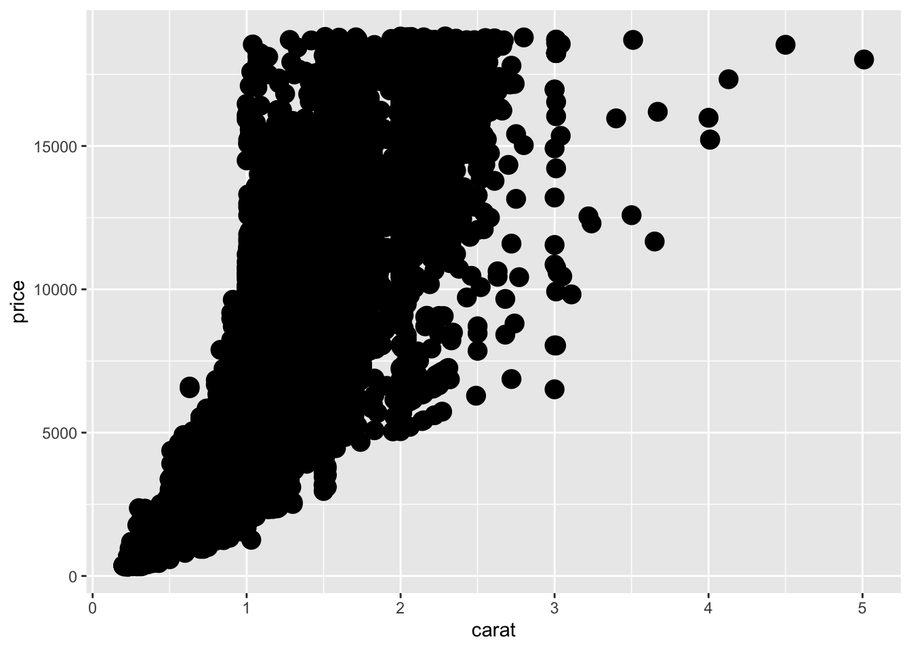
manually specifying point size of all points occurs outside of aes()
Here, we have manually increased the size of all the points on the plot.
4.6.4.3 Point Shape
You can also change the shape of the points (shape). We’ve used solid, filled circles thus far (the default in geom_point), but we could specify a different shape for each clarity.
# map clarity to point shape within aes
ggplot(data = diamonds) +
geom_point(mapping = aes(x = carat, y = price, shape = clarity))## Warning: Using shapes for an ordinal variable is not advised## Warning: The shape palette can deal with a maximum of 6 discrete values because
## more than 6 becomes difficult to discriminate; you have 8. Consider
## specifying shapes manually if you must have them.## Warning: Removed 5445 rows containing missing values (geom_point).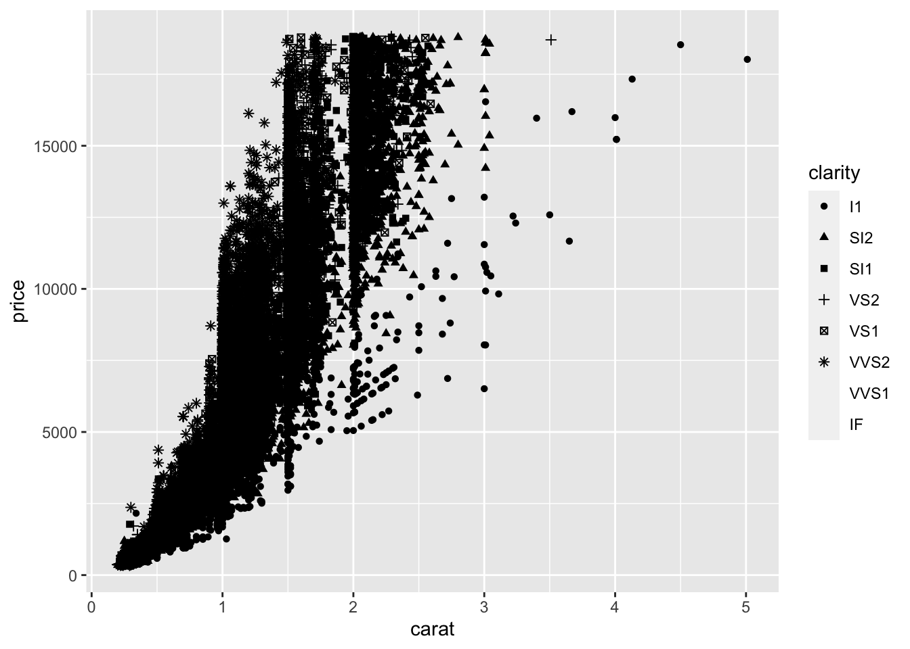
mapping clarity to shape
Here, while the mapping occurs correctly within ggplot2, we do get a warning message that discriminating more than six different shapes is difficult for the human eye. Thus, ggplot2 won’t allow more than six different shapes on a plot. This suggests that while you can do something, it’s not always the best to do that thing. Here, with more than six levels of clarity, it’s best to stick to mapping this variable to color as we did initially.
To manually specify a shape for all the points on your plot, you would specify it outside of aes using one of the twenty-five different shape options available:
options for points in ggplot2’s shape
For example, to plot all of the points on the plot as filled diamonds (it is a dataset about diamonds after all…), you would specify shape ‘18’:
# global control of point shape outside aes
ggplot(data = diamonds) +
geom_point(mapping = aes(x = carat, y = price), shape = 18)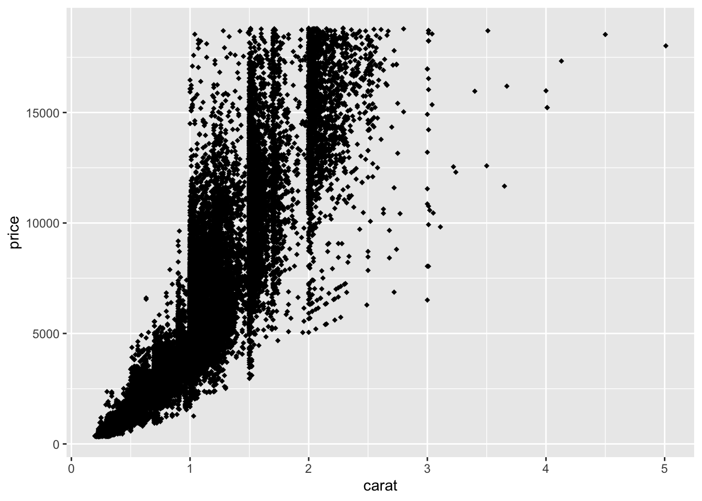
specifying filled diamonds as shape for all points manually
4.6.5 Facets
In addition to mapping variables to different aesthetics, you can also opt to use facets to help make sense of your data visually. Rather than plotting all the data on a single plot and visually altering the point size or color of a third variable in a scatterplot, you could break each level of that third variable out into a separate subplot. To do this, you would use faceting. Faceting is particularly helpful for looking at categorical variables.
To use faceting, you would add an additional layer (+) to your code and use the facet_wrap() function. Within facet wrap, you specify the variable by which you want your subplots to be made:
ggplot(data = diamonds) +
geom_point(mapping = aes(x = carat, y = price)) +
# facet by clarity
facet_wrap(~clarity, nrow = 2)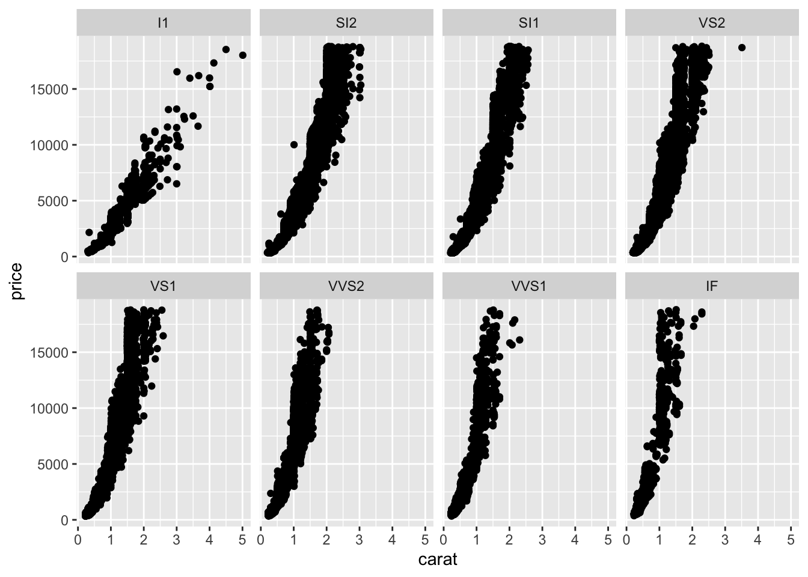
Here, read the tilde as the word “by”. Specifically here, we want a scatterplot of the relationship between carat and price and we want it faceted (broken down) by (~) clarity.

facet_wrap breaks plots down into subplots
Now, we have eight different plots, one for each level of clarity, where we can see the relationship between diamond carats and price.
You’ll note here we’ve opted to specify that we want 2 rows of subplots (nrow = 2). You can play around with the number of rows you want in your output to customize how your output plot appears.
4.6.6 Geoms
Thus far in this lesson we’ve only looked at scatterplots, which means we’ve only called geom_point. However, there are many additional geoms that we could call to generate different plots. Simply, a geom is just a shape we use to represent the data. In the case of scatterplots, they don’t really use a geom since each actual point is plotted individually. Other plots, such as the boxplots, barplots, and histograms we described in previous lessons help to summarize or represent the data in a meaningful way, without plotting each individual point. The shapes used in these different types of plots to represent what’s going on in the data is that plot’s geom.
To see exactly what we mean by geoms being “shapes that represent the data”, let’s keep using the diamonds dataset, but instead of looking at the relationship between two numeric variables in a scatterplot, let’s take a step back and take a look at a single numeric variable using a histogram.
4.6.6.1 Histograms: geom_histogram
To review, histograms allow you to quickly visualize the range of values your variable takes and the shape of your data. (Are all the numbers clustered around center? Or, are they all at the extremes of the range? Somewhere in between? The answers to these questions describe the “shape” of the values of your variable.)
For example, if we wanted to see what the distribution of carats was for these data, we could to the following.
## `stat_bin()` using `bins = 30`. Pick better value with `binwidth`.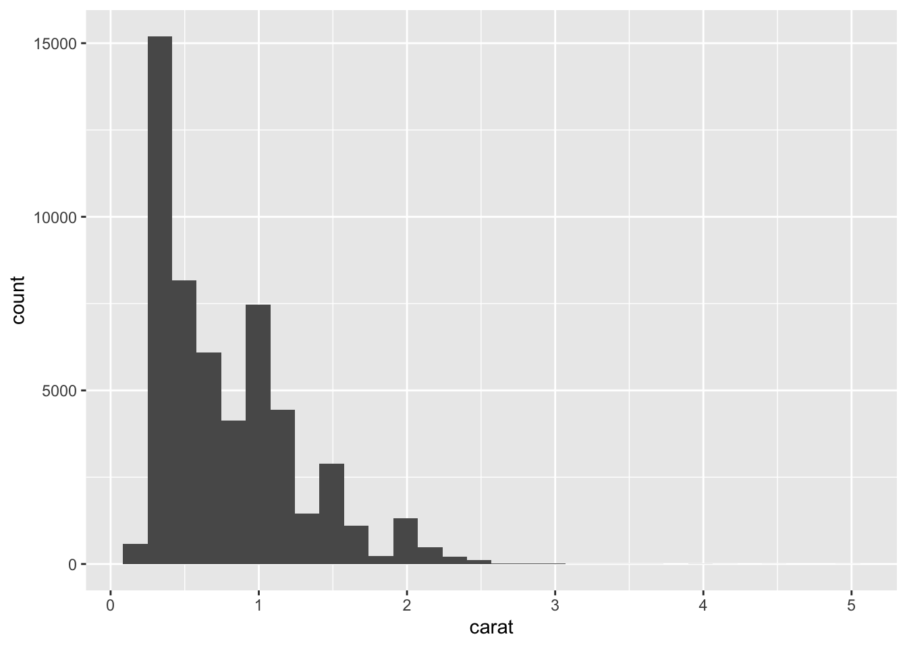

histogram of carat shows range and shape
The code follows what we’ve seen so far in this lesson; however, we’ve now called geom_histogram to specify that we want to plot a histogram rather than a scatterplot.
Here, the rectangular boxes on the plot are geoms (shapes) that represent the number of diamonds that fall into each bin on the plot. Rather than plotting each individual point, histograms use rectangular boxes to summarize the data. This summarization helps us quickly understand what’s going on in our dataset.
Specifically here, we can quickly see that most of the diamonds in the dataset are less than 1 carat. This is not necessarily something we could be sure of from the scatterplots generated previously in this lesson (since some points could have been plotted directly on top of one another). Thus, it’s often helpful to visualize your data in a number of ways when you first get a dataset to ensure that you understand the variables and relationships between variables in your dataset!
4.6.6.2 Barplots: geom_bar
Barplots show the relationship between a set of numbers and a categorical variable. In the diamonds dataset, we may be interested in knowing how many diamonds there are of each cut of diamonds. There are five categories for cut of diamond. If we make a barplot for this variable, we can see the number of diamonds in each category.
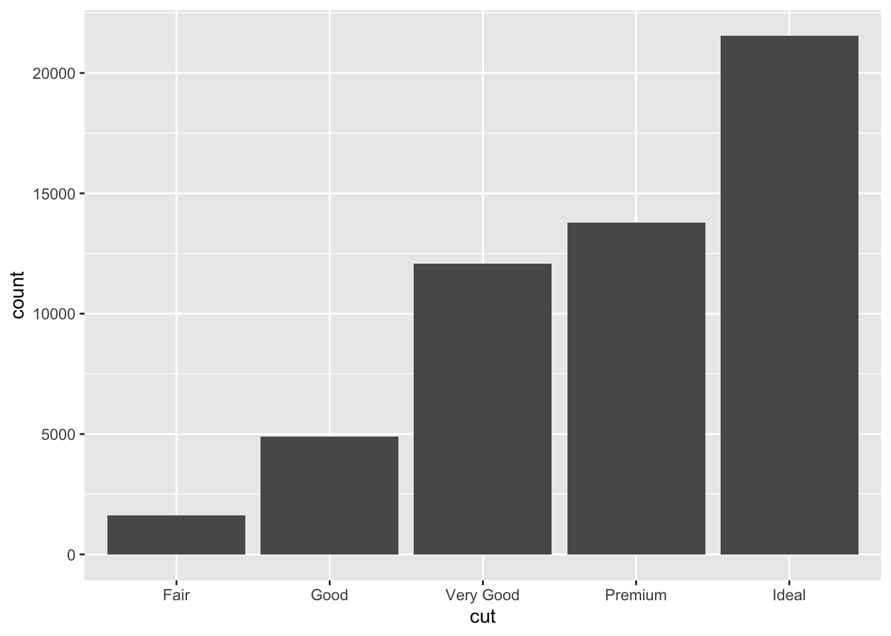
Again, the changes to the code are minimal. We are now interested in plotting the categorical variable cut and state that we want a bar plot, by including geom_bar().

diamonds barplot
Here, we again use rectangular shapes to represent the data, but we’re not showing the distribution of a single variable (as we were with geom_histogram). Rather, we’re using rectangles to show the count (number) of diamonds within each category within cut. Thus, we need a different geom: geom_bar!
4.6.6.3 Boxplots: geom_boxplot
Boxplots provide a summary of a numerical variable across categories. For example, if you were interested to see how the price of a diamond (a numerical variable) changed across different diamond color categories (categorical variable), you may want to use a boxplot. To do so, you would specify that using geom_boxplot:
# geom_boxplot for boxplots
ggplot(data = diamonds) +
geom_boxplot(mapping = aes(x = color, y = price))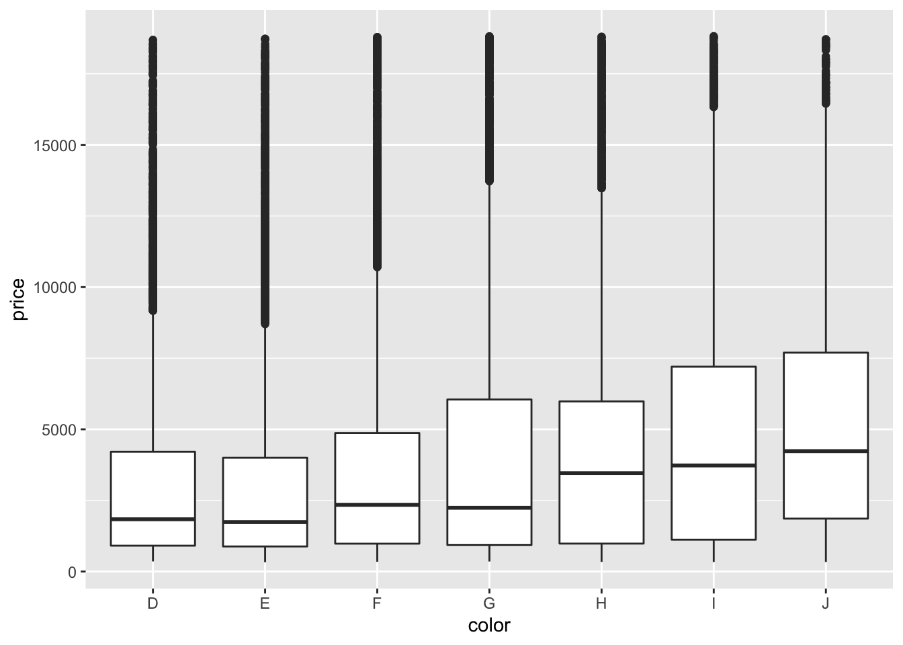
In the code, we see that again, we only have to change what variables we want to be included in the plot and the type of plot (or geom). We want to use geom_boxplot() to get a basic boxplot.

diamonds boxplot
In the figure itself we see that the median price (the black horizontal bar in the middle of each box represents the median for each category) increases as the diamond color increases from the worst category (J) to the best (D).
Now, if you wanted to change the color of this boxplot, it would just take a small addition to the code for the plot you just generated.
# fill globally changes bar color outside aes
ggplot(data = diamonds) +
geom_boxplot(mapping = aes(x = color, y = price),
fill = "red")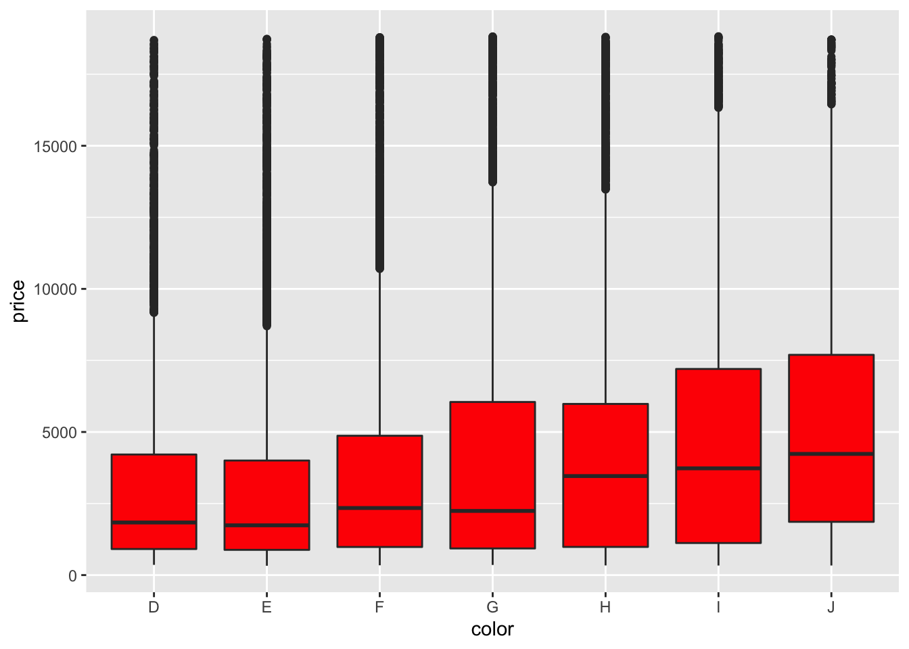

diamonds boxplot with red fill
Here, by specifying the color “red” in the fill argument, you’re able to change the plot’s appearance. In the next lesson, we’ll go deeper into the many ways in which a plot can be customized within ggplot2!
4.6.6.4 Other plots
While we’ve reviewed basic code to make a few common types of plots, there are a number of other plot types that can be made in ggplot2. These are listed in the online reference material for ggplot2 or can be accessed through RStudio directly. To do so, you would type ?geom_ into the Console in RStudio. A list of geoms will appear. You can hover your cursor over any one of these to get a short description.
?geom in Console
Or, you can select a geom from this list and click enter. After selecting a geom, such as geom_abline and hitting ‘Enter,’ the help page for that geom will pop up in the ‘Help’ tab at bottom right. Here, you can find more detailed information about the selected geom.
geom_abline help page
4.6.7 EDA Plots
As mentioned previously, an important step after you’ve read your data into R and wrangled it into a tidy format is to carry out Exploratory Data Analysis (EDA). EDA is the process of understanding the data in your dataset fully. To understand your dataset fully, you need a full understanding of the variables stored in your dataset, what information you have and what information you don’t have (missingness!). To gain this understanding, we’ve discussed using packages like skimr to get a quick idea of what information is stored in your dataset. However, generating plots is another critical step in this process. We encourage you to use ggplot2 to understand the distribution of each single variable as well as the relationship between each variable in your dataset.
In this process, using ggplot2 defaults is totally fine. These plots do not have to be the most effective visualizations for communication, so you don’t want to spend a ton of time making them visually perfect. Only spend as much time on these as you need to understand your data!
4.7 ggplot2: Customization
So far, we have walked through the steps of generating a number of different graphs (using different geoms) in ggplot2. We discussed the basics of mapping variables to your graph to customize its appearance or aesthetic (using size, shape, and color within aes()). Here, we’ll build on what we’ve previously learned to really get down to how to customize your plots so that they’re as clear as possible for communicating your results to others.
The skills learned in this lesson will help take you from generating exploratory plots that help you better understand your data to explanatory plots – plots that help you communicate your results to others. We’ll cover how to customize the colors, labels, legends, and text used on your graph.
Since we’re already familiar with it, we’ll continue to use the diamonds dataset that we’ve been using to learn about ggplot2.
4.7.1 Colors
To get started, we’ll learn how to control color across plots in ggplot2. Previously, we discussed using color within aes() on a scatterplot to automatically color points by the clarity of the diamond when looking at the relationship between price and carat.
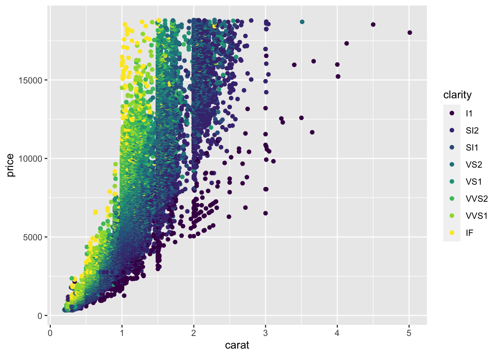
However, what if we wanted to carry this concept over to a bar plot and look at how many diamonds we have of each clarity group?


diamonds broken down by clarity
As a general note, we’ve stopped including data = and mapping = here within our code. We included it so far to be explicit; however, in code you see in the world, the names of the arguments will typically be excluded and we want you to be familiar with code that appears as you see above.
OK, well that’s a start since we see the breakdown, but all the bars are the same color. What if we adjusted color within aes()?


color does add color but around the bars
As expected, color added a legend for each level of clarity; however, it colored the lines around the bars on the plot, rather than the bars themselves. In order to color the bars themselves, you want to specify the more helpful argument fill:
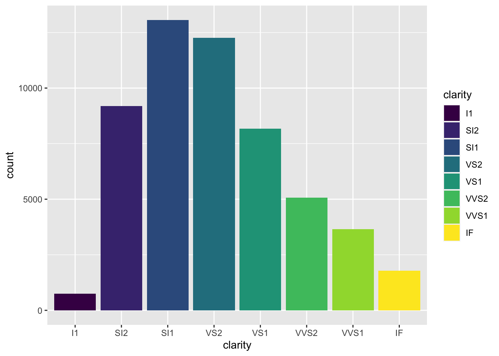
fill automatically colors the bars
Great! We now have a plot with bars of different colors, which was our first goal! However, adding colors here, while maybe making the plot prettier doesn’t actually give us any more information. We can see the same pattern of which clarity is most frequent among the diamonds in our dataset like we could see in the first plot we made.
Color is particularly helpful here, however, if we wanted to map a different variable onto each bar. For example, what if we wanted to see the breakdown of diamond “cut” within each “clarity” bar?
# fill by separate variable (cut) = stacked bar chart
ggplot(diamonds) +
geom_bar(aes(x = clarity, fill = cut))
mapping a different variable to fill provides new information
Now we’re getting some new information! We can see that each level in clarity appears to have diamonds of all levels of cut. Color here has really helped us understand more about the data.
But what if we were going to present these data? While there is no comparison between red and green (which is good!), there is a fair amount of yellow in this plot. Some projectors don’t handle projecting yellow well, and it will show up too light on the screen. To avoid this, let’s manually change the colors in this bar chart! To do so we’ll add an additional layer to the plot using scale_fill_manual.
ggplot(diamonds) +
geom_bar(aes(x = clarity, fill = cut)) +
# manually control colors used
scale_fill_manual(values = c("red", "orange", "darkgreen", "dodgerblue", "purple4"))manually setting colors using scale_fill_manual
Here, we’ve specified five different colors within the values argument of scale_fill_manual(), one for each cut of diamond. The names of these colors can be specified using the names explained on the third page of the cheatsheet here. (Note: There are other ways to specify colors within R. Explore the details in that cheatsheet to better understand the various ways!)
Additionally, it’s important to note that here we’ve used scale_fill_manual() to adjust the color of what was mapped using fill = cut. If we had colored our chart using color within aes(), there is a different function called scale_color_manual. This makes good sense! You use scale_fill_manual() with fill and scale_color_manual() with color. Keep that in mind as you adjust colors in the future!
Now that we have some sense of which clarity is most common in our diamonds dataset and now that we are able to successfully specify the colors we want manually in order to make this plot useful for presentation, what if we wanted to compare the proportion of each cut across the different clarities? Currently, that’s difficult because there is a different number within each clarity. In order to compare the proportion of each cut we have to use position adjustment.
What we’ve just generated is a stacked bar chart. It’s a pretty good name for this type of chart as the bars for cut are all stacked on top of one another. If you don’t want a stacked bar chart you could use one of the other position options: identity, fill, or dodge.
Returning to our question about proportion of each cut within each clarity group, we’ll want to use position = "fill" within geom_bar(). Building off of what we’ve already done:
ggplot(diamonds) +
# fill scales to 100%
geom_bar(aes(x = clarity, fill = cut), position = "fill") +
scale_fill_manual(values = c("red", "orange", "darkgreen", "dodgerblue", "purple4"))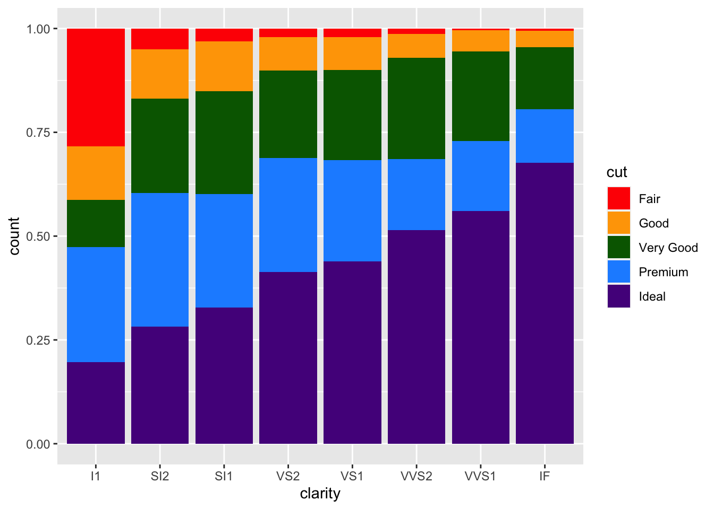

position = "fill" allows for comparison of proportion across groups
Here, we’ve specified how we want to adjust the position of the bars in the plot. Each bar is now of equal height and we can compare each colored bar across the different clarities. As expected, we see that among the best clarity group (IF), we see more diamonds of the best cut (“Ideal”)!
Briefly, we’ll take a quick detour to look at position = "dodge". This position adjustment places each object next to one another. This will not allow for easy comparison across groups, as we just saw with the last group but will allow values within each clarity group to be visualized.
ggplot(diamonds) +
# dodge rather than stack produces grouped bar plot
geom_bar(aes(x = clarity, fill = cut), position = "dodge") +
scale_fill_manual(values = c("red", "orange", "darkgreen", "dodgerblue", "purple4"))
position = "dodge" helps compare values within each group
Unlike in the first plot where we specified fill = cut, we can actually see the relationship between each cut within the lowest clarity group (I1). Before, when the values were stacked on top of one another, we were not able to visually see that there were more “Fair” and “Premium” cut diamonds in this group than the other cuts. Now, with position = "dodge", this information is visually apparent.
Note: position = "identity" is not very useful for bars, as it places each object exactly where it falls within the graph. For bar charts, this will lead to overlapping bars, which is not visually helpful. However, for scatterplots (and other 2-Dimensional charts), this is the default and is exactly what you want.
4.7.2 Labels
Text on plots is incredibly helpful. A good title tells viewers what they should be getting out of the plot. Axis labels are incredibly important to inform viewers of what’s being plotted. Annotations on plots help guide viewers to important points in the plot. We’ll discuss how to control all of these now!
4.7.2.1 Titles
Now that we have an understanding of how to manually adjust color, let’s improve the clarity of our plots by including helpful labels by adding an additional labs() layer. We’ll return to the plot where we were comparing proportions of diamond cut across diamond clarity groups.
You can include a title, subtitle, and/or caption within the labs() function. Each argument, as per usual, will be specified by a comma.
ggplot(diamonds) +
geom_bar(aes(x = clarity, fill = cut), position = "fill") +
scale_fill_manual(values = c("red", "orange", "darkgreen", "dodgerblue", "purple4")) +
# add titles
labs(title = "Clearer diamonds tend to be of higher quality cut",
subtitle = "The majority of IF diamonds are an \"Ideal\" cut")
labs() adds helpful tittles, subtitles, and captions
4.7.2.2 Axis labels
You may have noticed that our y-axis label says “count”, but it’s not actually a count anymore. In reality, it’s a proportion. Having appropriately labeled axes is so important. Otherwise, viewers won’t know what’s being plotted. So, we should really fix that now using the ylab() function. Note: we won’t be changing the x-axis label, but if you were interested in doing so, you would use xlab("label").
ggplot(diamonds) +
geom_bar(aes(x = clarity, fill = cut), position = "fill") +
scale_fill_manual(values = c("red", "orange", "darkgreen", "dodgerblue", "purple4")) +
labs(title = "Clearer diamonds tend to be of higher quality cut",
subtitle = "The majority of IF diamonds are an \"Ideal\" cut") +
# add y axis label explicitly
ylab("proportion")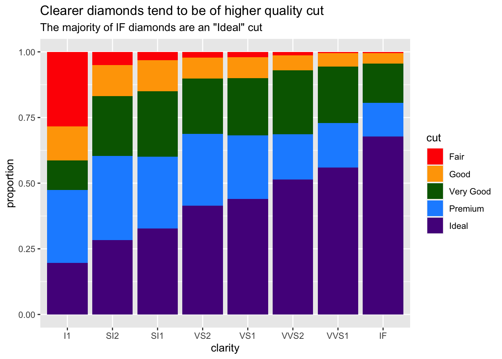
Note that the x- and y- axis labels can also be changed within labs(), using the argument (x = and y = respectively).

Accurate axis labels are incredibly important
4.7.3 Themes
To change the overall aesthetic of your graph, there are 8 themes built into ggplot2 that can be added as an additional layer in your graph:

themes
For example, if we wanted remove the gridlines and grey background from the chart, we would use theme_classic(). Building on what we’ve already generated:
ggplot(diamonds) +
geom_bar(aes(x = clarity, fill = cut), position = "fill") +
scale_fill_manual(values = c("red", "orange", "darkgreen", "dodgerblue", "purple4")) +
labs(title = "Clearer diamonds tend to be of higher quality cut",
subtitle = "The majority of IF diamonds are an \"Ideal\" cut") +
ylab("proportion") +
# change plot theme
theme_classic()theme_classic changes aesthetic of our plot
We now have a pretty good looking plot! However, a few additional changes would make this plot even better for communication.
Note: Additional themes are available from the ggthemes package. Users can also generate their own themes.
4.7.4 Custom Theme
In addition to using available themes, we can also adjust parts of the theme of our graph using an additional theme() layer. There are a lot of options within theme. To see them all, look at the help documentation within RStudio Cloud using: ?theme. We’ll simply go over the syntax for using a few of them here to get you comfortable with adjusting your theme. Later on, you can play around with all the options on your own to become an expert!
4.7.4.1 Altering text size
For example, if we want to increase text size to make our plots more easily to view when presenting, we could do that within theme. Notice here that we’re increasing the text size of the title, axis.text, axis.title, and legend.text all within theme()! The syntax here is important. Within each of the elements of the theme you want to alter, you have to specify what it is you want to change. Here, for all three, we want to alter the text, so we specify element_text(). Within that, we specify that it’s size that we want to adjust.
ggplot(diamonds) +
geom_bar(aes(x = clarity, fill = cut), position = "fill") +
scale_fill_manual(values = c("red", "orange", "darkgreen", "dodgerblue", "purple4")) +
labs(title = "Clearer diamonds tend to be of higher quality cut",
subtitle = "The majority of IF diamonds are an \"Ideal\" cut") +
ylab("proportion") +
theme_classic() +
# control theme
theme(title = element_text(size = 16),
axis.text = element_text(size =14),
axis.title = element_text(size = 16),
legend.text = element_text(size = 14))theme() allows us to adjust font size
4.7.4.2 Additional text alterations
Changing the size of text on your plot is not the only thing you can control within theme(). You can make text bold and change its color within theme(). Note here that multiple changes can be made to a single element. We can change size and make the text bold. All we do is separate each argument with a comma, per usual.
ggplot(diamonds) +
geom_bar(aes(x = clarity, fill = cut), position = "fill") +
scale_fill_manual(values = c("red", "orange", "darkgreen", "dodgerblue", "purple4")) +
labs(title = "Clearer diamonds tend to be of higher quality cut",
subtitle = "The majority of IF diamonds are an \"Ideal\" cut") +
ylab("proportion") +
theme_classic() +
theme(title = element_text(size = 16),
axis.text = element_text(size = 14),
axis.title = element_text(size = 16, face = "bold"),
legend.text = element_text(size = 14),
# additional control
plot.subtitle = element_text(color = "gray30"))theme() allows us to tweak many parts of our plot
Any alterations to plot spacing/background, title, axis, and legend will all be made within theme().
4.7.5 Legends
At this point, all the text on the plot is pretty visible! However, there’s one thing that’s still not quite clear to viewers. In daily life, people refer to the “cut” of a diamond by terms like “round cut” or “princess cut” to describe the shape of the diamond. That’s not what we’re talking about here when we’re discussing “cut”. In these data, “cut” refers to the quality of the diamond, not the shape. Let’s be sure that’s clear as well! We can change the name of the legend by using an additional layer and the guides() and guide_legend() functions of the ggplot2 package!
ggplot(diamonds) +
geom_bar(aes(x = clarity, fill = cut), position = "fill") +
scale_fill_manual(values = c("red", "orange", "darkgreen", "dodgerblue", "purple4")) +
labs(title = "Clearer diamonds tend to be of higher quality cut",
subtitle = "The majority of IF diamonds are an \"Ideal\" cut") +
ylab("proportion") +
theme_classic() +
theme(title = element_text(size = 16),
axis.text = element_text(size = 14),
axis.title = element_text(size = 16, face = "bold"),
legend.text = element_text(size = 14),
plot.subtitle = element_text(color = "gray30")) +
# control legend
guides(fill = guide_legend("cut quality")) guides() allows us to change the legend title
This guides() function, as well as the guides_* functions allow us to modify legends even further.
This is especially useful if you have many colors in your legend and you want to control how the legend is displayed in terms of the number of columns and rows using ncol and nrow respectively.
ggplot(diamonds) +
geom_bar(aes(x = clarity, fill = cut), position = "fill") +
scale_fill_manual(values = c("red", "orange", "darkgreen", "dodgerblue", "purple4")) +
labs(title = "Clearer diamonds tend to be of higher quality cut",
subtitle = "The majority of IF diamonds are an \"Ideal\" cut") +
ylab("proportion") +
theme_classic() +
theme(title = element_text(size = 16),
axis.text = element_text(size = 14),
axis.title = element_text(size = 16, face = "bold"),
legend.text = element_text(size = 14),
plot.subtitle = element_text(color = "gray30")) +
# control legend
guides(fill = guide_legend("Cut Quality",
ncol = 2))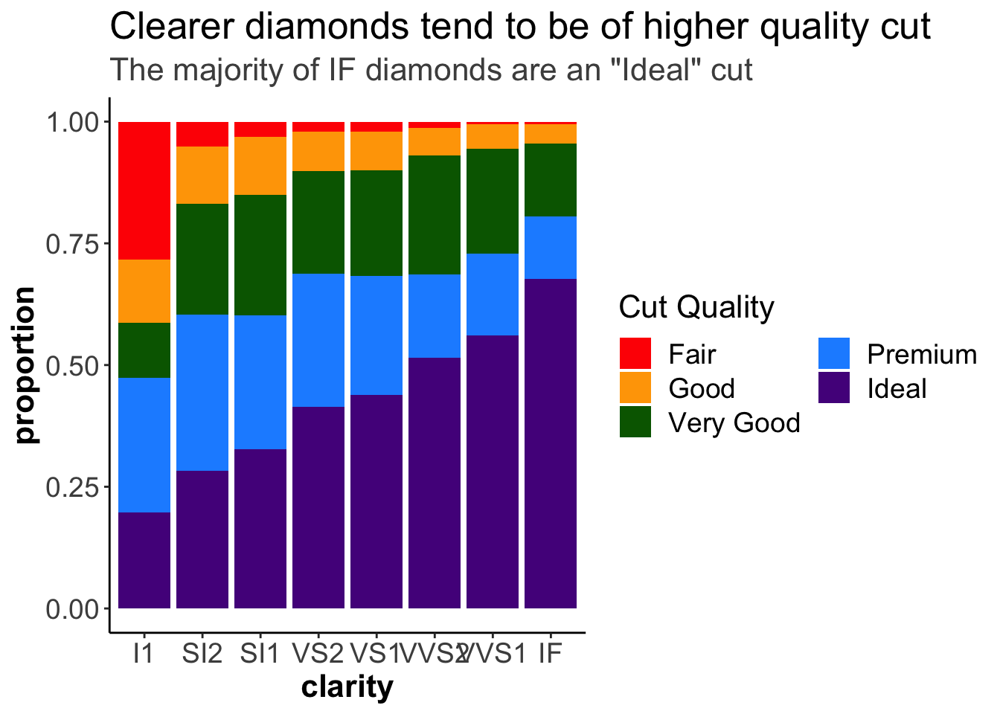
Or, we can modify the font of the legend title using title.theme().
ggplot(diamonds) +
geom_bar(aes(x = clarity, fill = cut), position = "fill") +
scale_fill_manual(values = c("red", "orange", "darkgreen", "dodgerblue", "purple4")) +
labs(title = "Clearer diamonds tend to be of higher quality cut",
subtitle = "The majority of IF diamonds are an \"Ideal\" cut") +
ylab("proportion") +
theme_classic() +
theme(title = element_text(size = 16),
axis.text = element_text(size = 14),
axis.title = element_text(size = 16, face = "bold"),
legend.text = element_text(size = 14),
plot.subtitle = element_text(color = "gray30")) +
# control legend
guides(fill = guide_legend("Cut Quality",
title.theme = element_text(face = "bold")))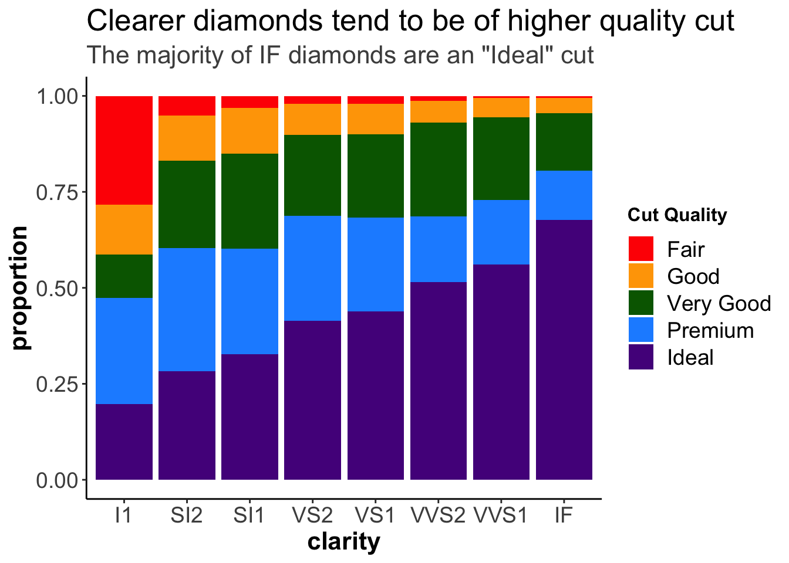
Alternatively, we can do this modification, as well as other legend modifications, like adding a rectangle around the legend, using the theme() function.
ggplot(diamonds) +
geom_bar(aes(x = clarity, fill = cut), position = "fill") +
scale_fill_manual(values = c("red", "orange", "darkgreen", "dodgerblue", "purple4")) +
labs(title = "Clearer diamonds tend to be of higher quality cut",
subtitle = "The majority of IF diamonds are an \"Ideal\" cut") +
ylab("proportion") +
# changing the legend title:
guides(fill = guide_legend("Cut Quality")) +
theme_classic() +
theme(title = element_text(size = 16),
axis.text = element_text(size = 14),
axis.title = element_text(size = 16, face = "bold"),
legend.text = element_text(size = 14),
plot.subtitle = element_text(color = "gray30"),
# changing the legend style:
legend.title = element_text(face = "bold"),
legend.background = element_rect(color = "black"))At this point, we have an informative title, clear colors, a well-labeled legend, and text that is large enough throughout the graph. This is certainly a graph that could be used in a presentation. We’ve taken it from a graph that is useful to just ourselves (exploratory) and made it into a plot that can communicate our findings well to others (explanatory)!
We have touched on a number of alterations you can make by adding additional layers to a ggplot. In the rest of this lesson we’ll touch on a few more changes you can make within ggplot2.
4.7.6 Scales
There may be times when you want a different number of values to be displayed on an axis. The scale of your plot for continuous variables (i.e. numeric variables) can be controlled using scale_x_continuous or scale_y_continuous. Here, we want to increase the number of labels displayed on the y-axis, so we’ll use scale_y_continuous:
ggplot(diamonds) +
geom_bar(aes(x = clarity)) +
# control scale for continuous variable
scale_y_continuous(breaks = seq(0, 17000, by = 1000))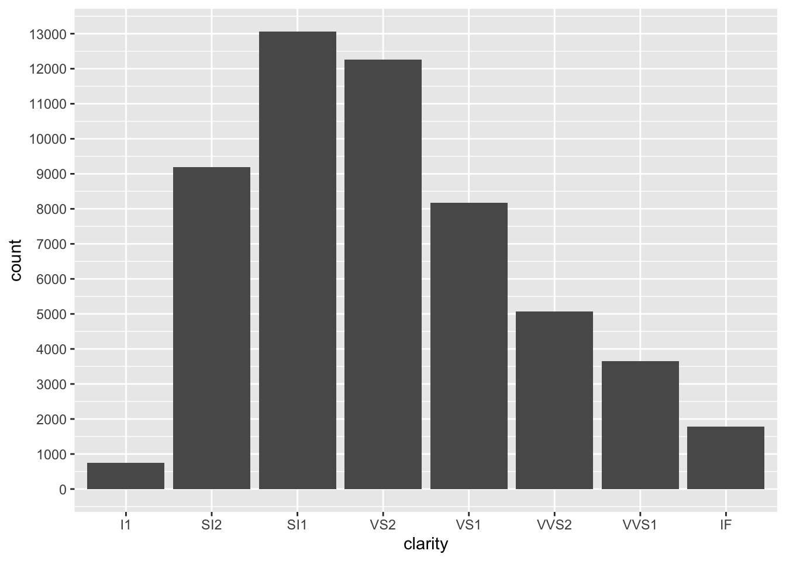
Continuous scales can be altered
There is very handy argument called trans for the scale_y_continuous or the scale_x_continuous functions to change the scale of the axes. For example, it can be very useful to show the logarithmic version of the scale if you have very high values with large differences.
According to the documentation for the trans argument:
Built-in transformations include “asn”, “atanh”, “boxcox”, “date”, “exp”, “hms”, “identity”, “log”, “log10”, “log1p”, “log2”, “logit”, “modulus”, “probability”, “probit”, “pseudo_log”, “reciprocal”, “reverse”, “sqrt” and “time”.
ggplot(diamonds) +
geom_bar(aes(x = clarity)) +
# control scale for continuous variable
scale_y_continuous(trans = "log10") +
labs(y = "Count (log10 scale)",
x = "Clarity")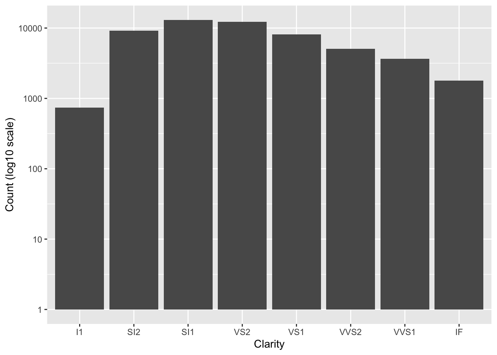
Notice that the values are not changed, just the way they are plotted. Now the y-axis increases by a factor of 10 for each break.
We will create a plot of the price of the diamonds to demonstrate the utility of creating a plot with a log10 scaled y-axis.
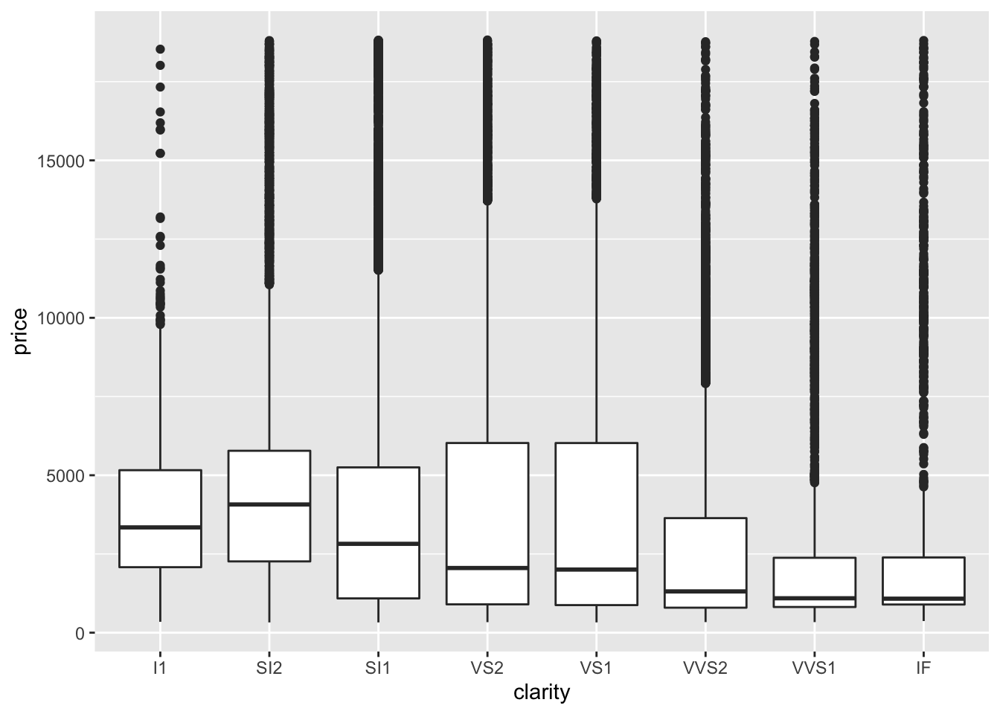
ggplot(diamonds) +
geom_boxplot(aes(y = price, x = clarity)) +
scale_y_continuous(trans = "log10") +
labs(y = "Price (log10 scale)",
x = "Diamond Clarity")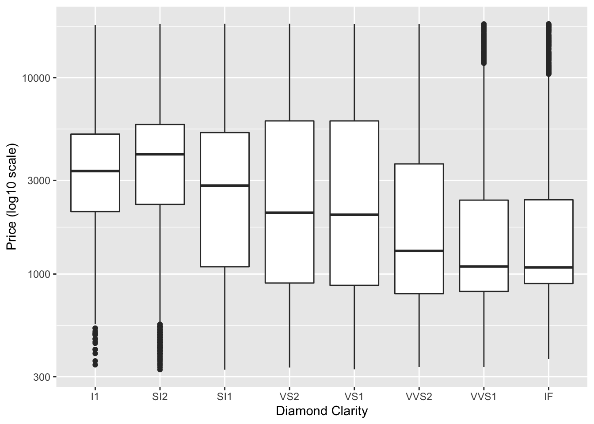
In the first plot, it is difficult to tell what values the boxplots correspond to and it is difficult to compare the boxplots (particularly for the last three clarity categories), however this is greatly improved in the second plot.
We can also use another argument of the scale_y_continuous() function to add specific labels to our plot. For example, it would be nice to add dollar signs to the y-axis. We can do so using the labels argument. A variety of label_* functions within the scales package can be used to modify axis labels. See here to take a look at the many options.
ggplot(diamonds) +
geom_boxplot(aes(y = price, x = clarity)) +
scale_y_continuous(trans = "log10",
labels = scales::label_dollar()) +
labs(y = "Price (log10 scale)",
x = "Diamond Clarity")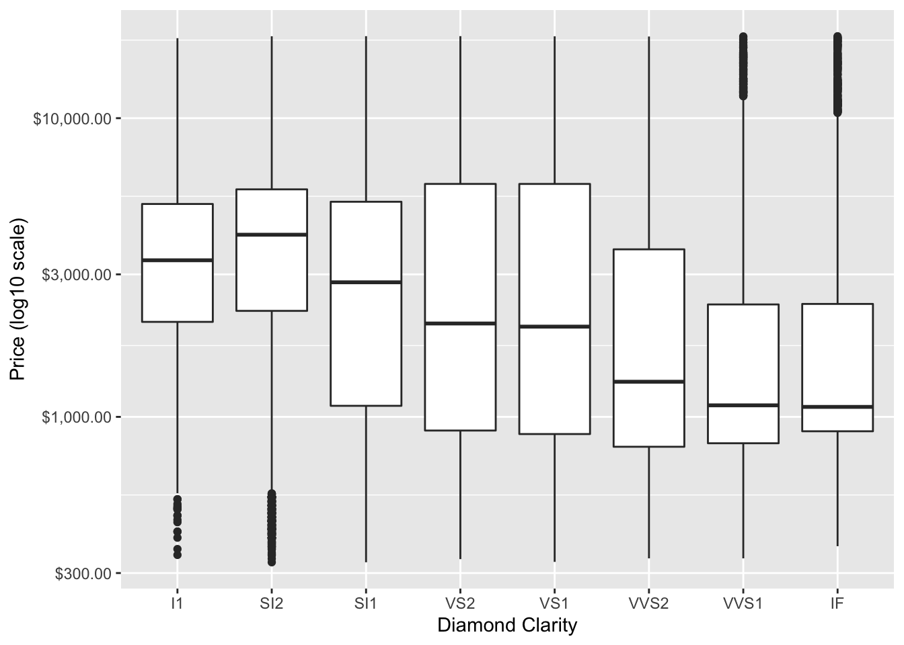
In the above plot, we might also want to order the boxplots by the median price, we can do so using the fct_reorder function of forcats package to change the order for the clarity levels to be based on the median of the price values.
ggplot(diamonds) +
geom_boxplot(aes(y = price, x = forcats::fct_reorder(clarity, price, .fun = median))) +
scale_y_continuous(trans = "log10",
labels = scales::label_dollar()) +
labs(y = "Price (log10 scale)",
x = "Diamond Clarity")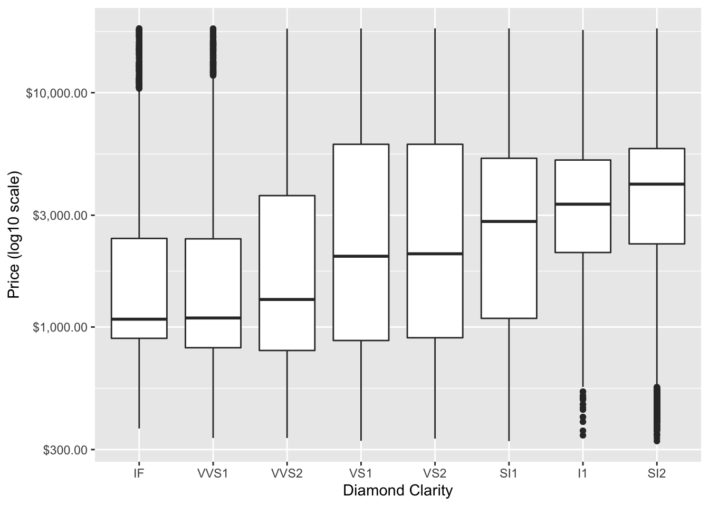
Now we can more easily determine that the SI2 diamonds are the most expensive.
Another way to modify discrete variables (aka factors or categorical variables where there is a limited number of levels), is to use scale_x_discrete or scale_y_discrete. In this case we will just pick a few of the clarity categories to plot and we will specify the order.
ggplot(diamonds) +
geom_bar(aes(x = clarity)) +
# control scale for discrete variable
scale_x_discrete(limit = c("SI2", "SI1", "I1")) +
scale_y_continuous(breaks = seq(0, 17000, by = 1000)) Discrete scales can be altered
4.7.7 Coordinate Adjustment
There are times when you’ll want to flip your axis. This can be accomplished using coord_flip(). Adding an additional layer to the plot we just generated switches our x- and y-axes, allowing for horizontal bar charts, rather than the default vertical bar charts:
ggplot(diamonds) +
geom_bar(aes(x = clarity)) +
scale_y_continuous(breaks = seq(0, 17000, by = 1000)) +
scale_x_discrete(limit = c("SI2", "SI1", "I1")) +
# flip coordinates
coord_flip() +
labs(title = "Clearer diamonds tend to be of higher quality cut",
subtitle = "The majority of IF diamonds are an \"Ideal\" cut") +
ylab("proportion") +
theme_classic() +
theme(title = element_text(size = 18),
axis.text = element_text(size = 14),
axis.title = element_text(size = 16, face = "bold"),
legend.text = element_text(size = 14),
plot.subtitle = element_text(color = "gray30")) +
guides(fill = guide_legend("cut quality")) ## Warning: Removed 30940 rows containing non-finite values (stat_count).Axes can be flipped using coord_flip
It’s important to remember that all the additional alterations we already discussed can still be applied to this graph, due to the fact that ggplot2 uses layering!
p <- ggplot(diamonds) +
geom_bar(mapping = aes(x = clarity)) +
scale_y_continuous(breaks = seq(0, 17000, by = 1000)) +
scale_x_discrete(limit = c("SI2", "SI1", "I1")) +
coord_flip() +
labs(title = "Number of diamonds by diamond clarity",
subtitle = "Subset of all diamonds, looking three levels of clarity") +
theme_classic() +
theme(title = element_text(size = 18),
axis.text = element_text(size = 14),
axis.title = element_text(size = 16, face = "bold"),
legend.text = element_text(size = 14),
plot.subtitle = element_text(color = "gray30") ) Additional layers will help customize this plot
4.7.8 Annotation
Finally, there will be times when you’ll want to add text to a plot or to annotate points on your plot. We’ll discuss briefly how to accomplish that here!
To add text to your plot, we can use the function annotate. This requires us to specify that we want to annotate here with “text” (rather than say a shape, like a rectangle - “rect” - which you can also do!). Additionally, we have to specify what we’d like that text to say (using the label argument), where on the plot we’d like that text to show up (using x and y for coordinates), how we’d like the text aligned (using hjust for horizontal alignment where the options are “left”, “center”, or “right” and vjust for vertical alignment where the arguments are “top”, “center”, or “bottom”), and how big we’d like that text to be (using size):
ggplot(diamonds) +
geom_bar(aes(x = clarity)) +
scale_y_continuous(breaks = seq(0, 17000, by = 1000)) +
scale_x_discrete(limit = c("SI2", "SI1", "I1")) +
coord_flip() +
labs(title = "Number of diamonds by diamond clarity",
subtitle = "Subset of all diamonds, looking three levels of clarity") +
theme_classic() +
theme(title = element_text(size = 18),
axis.text = element_text(size = 14),
axis.title = element_text(size = 16, face = "bold"),
legend.text = element_text(size = 14),
plot.subtitle = element_text(color = "gray30")) +
# add annotation
annotate("text", label = "SI1 diamonds are among \n the most frequent clarity diamond",
y = 12800, x = 2.9,
vjust = "top", hjust = "right",
size = 6)## Warning: Removed 30940 rows containing non-finite values (stat_count).annotate helps add text to our plot
Note: we could have accomplished this by adding an additional geom: geom_text. However, this requires creating a new data frame, as explained here. This can also be used to label the points on your plot. Keep this reference in mind in case you have to do that in the future.
4.7.9 Vertical and Horizontal Lines
Sometimes it is very useful to add a line to our plot to indicate an important threshold. We can do so by using the geom_hline() function for a horizontal line and geom_vline() for a vertical line.
In each case, the functions require that a y-axis intercept or x-axis intercept be specified respectively.
For example, it might be useful to add a horizontal line to indicate 50% of the total counts for each of the clarity categories. We will also use the scale_y_continuous() function to change the y-axis to show percentages.
ggplot(diamonds) +
# fill scales to 100%
geom_bar(aes(x = clarity, fill = cut), position = "fill") +
scale_fill_manual(values = c("red", "orange", "darkgreen", "dodgerblue", "purple4")) +
scale_y_continuous(labels = scales::percent) +
labs(y = "Percent of diamonds") +
geom_hline(yintercept = 0.5, color = "red", size = 1)Now, it is easier to tell that slightly over half of the VVS2 diamonds have an Ideal cut. This would be much more difficult to see without the horizontal line.
To add a vertical line we would instead use the geom_vline() function and we would specify an x-axis intercept. Since this plot has a discrete x-axis, numeric values specify a categorical value based on the order, thus a value of 4 would create a line down the center of the VS2 bar. However, if we used 5.5 we could add a line offset from the center of a bar, as you can see in the following example:
ggplot(diamonds) +
# fill scales to 100%
geom_bar(aes(x = clarity, fill = cut), position = "fill") +
scale_fill_manual(values = c("red", "orange", "darkgreen", "dodgerblue", "purple4")) +
scale_y_continuous(labels = scales::percent) +
labs(y = "Percent of diamonds") +
geom_hline(yintercept = 0.5, color = "red", size = 1 ) +
geom_vline(xintercept = 5.5, color = "black", size = .5)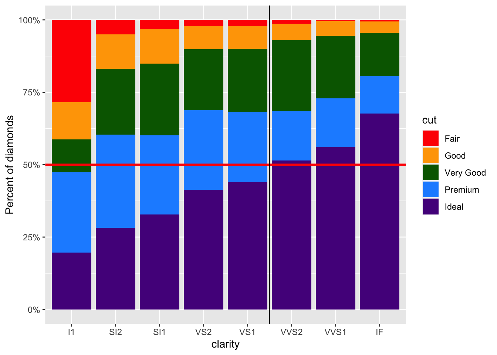
This would be helpful if we wanted to especially point out differences between the last three clarity categories of diamonds compared to the other categories.
4.8 Tables
While we have focused on figures here so far, tables can be incredibly informative at a glance too. If you are looking to display summary numbers, a table can also visually display information.
Using this same dataset, we can use a table to get a quick breakdown of how many males and females there are in the dataset and what percentage of each gender there is.
A few things to keep in mind when making tables is that it’s best to:
- Limit the number of digits in the table
- Include a caption
- When possible, keep it simple.

Table
4.8.1 Tables in R
Now that we have a good understanding of what to consider when making tables, we can to practice making good tables in R. To do this, we’ll continue to use the diamonds dataset (which is part of the ggplot2 package). As a reminder, this dataset contains prices and other information about ~54,000 different diamonds. If we want to provide viewers with a summary of these data, we may want to provide information about diamonds broken down by the quality of the diamond’s cut. To get our data in the form we want we will use the dplyr package, which we discussed in a lesson earlier.
4.8.2 Getting the Data in Order
To start figuring out how the quality of the cut of the diamond affects the price of that diamond, we first have to get the data in order. To do that we’ll use the dplyr package. This allows us to group the data by the quality of the cut (cut) before summarizing the data to determine the number of diamonds in each category (N), the minimum price of the diamonds in this category (min), the average price (avg), and the highest price in the category (max).
To get these data in order, you could use the following code. This code groups the data by cut (quality of the diamond) and then calculates the number of diamonds in each group (N), the minimum price across each group (min), the average price of diamonds across each group (avg), and the maximum price within each group (max):
4.8.3 An Exploratory Table
## # A tibble: 5 x 5
## cut N min avg max
## * <ord> <int> <int> <dbl> <int>
## 1 Fair 1610 337 4359. 18574
## 2 Good 4906 327 3929. 18788
## 3 Very Good 12082 336 3982. 18818
## 4 Premium 13791 326 4584. 18823
## 5 Ideal 21551 326 3458. 18806By getting the data summarized into a single object in R (df), we’re on our way to making an informative table. However, this is clearly just an exploratory table. The output in R from this code follows some of the good table rules above, but not all of them. At a glance, it will help you to understand the data, but it’s not the finished table you would want to send to your boss.
Exploratory diamonds table
From this output, you, the creator of the table, would be able to see that there are a number of good qualities:
- there is a reasonable number of rows and columns - There are 5 rows and 5 columns. A viewer can quickly look at this table and determine what’s going on.
- the first column
cutis organized logically - The lowest quality diamond category is first and then they are ordered vertically until the highest quality cut (ideal)) - comparisons are made top to bottom - To compare between the groups, your eye only has to travel up and down, rather than from left to right.
There are also things that need to be improved on this table:
- column headers could be even more clear
- there’s no caption/title
- it could be more aesthetically pleasing
4.8.4 Improving the Table Output
By-default, R outputs tables in the Console using a monospaced font. However, this limits our ability to format the appearance of the table. To fix the remaining few problems with the table’s format, we’ll use the kable() function from the R package knitr and the additional formatting capabilities of the R packages kableExtra.
The first step to a prettier table just involves using the kable() function from the knitr package, which improves the readability of this table. The knitr package is not a core tidyverse package, so you’ll have to be sure it’s installed and loaded.
| cut | N | min | avg | max |
|---|---|---|---|---|
| Fair | 1610 | 337 | 4358.758 | 18574 |
| Good | 4906 | 327 | 3928.864 | 18788 |
| Very Good | 12082 | 336 | 3981.760 | 18818 |
| Premium | 13791 | 326 | 4584.258 | 18823 |
| Ideal | 21551 | 326 | 3457.542 | 18806 |
kable basic output
However, there are still a few issues we want to improve upon:
- column names could be more informative
- too many digits in the
avgcolumn - caption/title is missing
- source of data not included
To begin addressing these issues, we can use the add_header_above function from kableExtra() to specify that the min, avg, and max columns refer to price in US dollars (USD). Additionally, kable() takes a digits argument to specify how many significant digits to display. This takes care of the display of too many digits in the avg column. Finally, we can also style the table so that every other row is shaded, helping our eye to keep each row’s information separate from the other rows using kable_styling() from kableExtra. These few changes really improve the readability of the table.
If you copy this code into your R console, the formatted table will show up in the Viewer tab at the bottom right-hand side of your RStudio console and the HTML code used to generate that table will appear in your console.
# install.packages("kableExtra")
library(kableExtra)
# use kable_styling to control table appearance
kable(df, digits=0, "html") %>%
kable_styling("striped", "bordered") %>%
add_header_above(c(" " = 2, "price (USD)" = 3)) | cut | N | min | avg | max |
|---|---|---|---|---|
| Fair | 1610 | 337 | 4359 | 18574 |
| Good | 4906 | 327 | 3929 | 18788 |
| Very Good | 12082 | 336 | 3982 | 18818 |
| Premium | 13791 | 326 | 4584 | 18823 |
| Ideal | 21551 | 326 | 3458 | 18806 |
Viewer tab with formatted table
4.8.5 Annotating Your Table
We mentioned earlier that captions and sourcing your data are incredibly important. The kable package allows for a caption argument. Below, an informative caption has been included. Additionally, kableExtra has a footnote() function. This allows you to include the source of your data at the bottom of the table. With these final additions, you have a table that clearly displays the data and could be confidently shared with your boss.
kable(df, digits=0, "html", caption="Table 1: Diamonds Price by Quality of Cut. Most Diamonds are of the highest quality cut and the most expensive diamonds are of the highest quality") %>%
kable_styling("striped", "bordered") %>%
# add headers and footnote
add_header_above(c(" " = 2, "price (USD)" = 3)) %>%
footnote(general = "Diamonds dataset from ggplot2", general_title = "Source:", footnote_as_chunk = T)| cut | N | min | avg | max |
|---|---|---|---|---|
| Fair | 1610 | 337 | 4359 | 18574 |
| Good | 4906 | 327 | 3929 | 18788 |
| Very Good | 12082 | 336 | 3982 | 18818 |
| Premium | 13791 | 326 | 4584 | 18823 |
| Ideal | 21551 | 326 | 3458 | 18806 |
| Source: Diamonds dataset from ggplot2 |
Viewer tab with annotated and formatted table
4.9 ggplot2: Extensions
Beyond the many capabilities of ggplot2, there are a few additional packages that build on top of ggplot2’s capabilities. We’ll introduce a few packages here so that you can:
- directly annotate points on plots (
ggrepelanddirectlabels) - combine multiple plots (
cowplot+patchwork) - generate animated plots (
gganimate)
These are referred to as ggplot2 extensions. There are dozens of additional ggplot2 extensions available if you’d like to explore other plotting options beyond what is covered here!
4.9.1 ggrepel
ggrepel “provides geoms forggplot2 to repel overlapping text labels.”
To demonstrate the functionality within the ggrepel package and demonstrate cases where it would be needed, let’s use a dataset available from R - the mtcars dataset:
The data was extracted from the 1974 Motor Trend US magazine, and comprises fuel consumption and 10 aspects of automobile design and performance for 32 automobiles (1973–74 models).
This dataset includes information about 32 different cars. Let’s first convert this from a data.frame to a tibble. Note that we will keep the rownames and make it a new variable called model.
## # A tibble: 6 x 12
## model mpg cyl disp hp drat wt qsec vs am gear carb
## <chr> <dbl> <dbl> <dbl> <dbl> <dbl> <dbl> <dbl> <dbl> <dbl> <dbl> <dbl>
## 1 Mazda RX4 21 6 160 110 3.9 2.62 16.5 0 1 4 4
## 2 Mazda RX4 W… 21 6 160 110 3.9 2.88 17.0 0 1 4 4
## 3 Datsun 710 22.8 4 108 93 3.85 2.32 18.6 1 1 4 1
## 4 Hornet 4 Dr… 21.4 6 258 110 3.08 3.22 19.4 1 0 3 1
## 5 Hornet Spor… 18.7 8 360 175 3.15 3.44 17.0 0 0 3 2
## 6 Valiant 18.1 6 225 105 2.76 3.46 20.2 1 0 3 1What if we were to plot a scatterplot between horsepower (hp) and weight (wt) of each car and wanted to label each point in that plot with the care model.
If we were to do that with ggplot2, we’d see the following:
# label points without ggrepel
ggplot(mtcars, aes(wt, hp, label = model)) +
geom_text() +
geom_point(color = 'dodgerblue') +
theme_classic()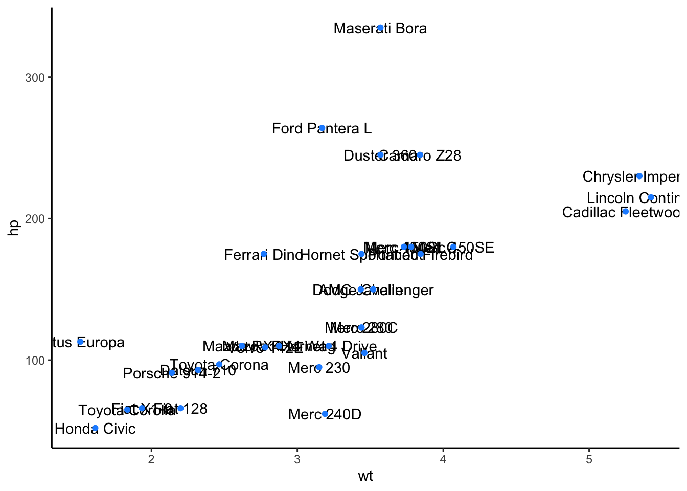
The overall trend is clear here - the more a car weights, the more horsepower it tends to have. However, many of the labels are overlapping and impossible to read - this is where ggrepel plays a role:
# install and load package
# install.packages("ggrepel")
library(ggrepel)
# label points with ggrepel
ggplot(mtcars, aes(wt, hp, label = model)) +
geom_text_repel() +
geom_point(color = 'dodgerblue') +
theme_classic()## Warning: ggrepel: 1 unlabeled data points (too many overlaps). Consider
## increasing max.overlaps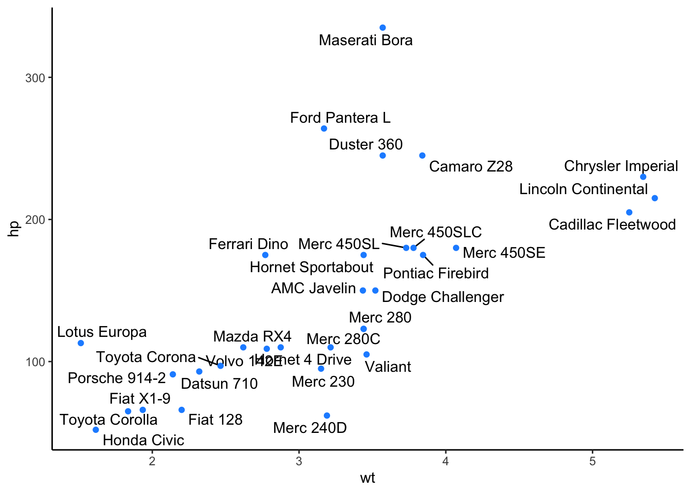
The only bit of code here that changed was that we changed geom_text() to geom_text_repel(). This, like geom_text() adds text directly to the plot. However, it also helpfully repels overlapping labels away from one another and away from the data points on the plot.
4.9.1.1 Custom Formatting
Within geom_text_repel(), there are a number of additional formatting options available. We’ll cover a number of the most important here, but the ggrepel vignettes explore these further.
Highlighting Specific Points
Often, you do not want to highlight all the points on a plot, but want to draw your viewer’s attention to a few specific points. To do this and say highlight only cars that are the make Mercedes, you could use the following approach:
# create a new column "merc" with true or false for Mercedes
# value is true for rows with "Merc" in model column
mtcars <- mtcars%>%
mutate(merc = str_detect(string = model, pattern = "Merc"))
# Let's just label these items and manually color the points
ggplot(mtcars, aes(wt, hp, label = model)) +
geom_point(aes(color = merc)) +
scale_color_manual(values = c("grey50", "dodgerblue")) +
geom_text_repel(data = filter(mtcars, merc == TRUE),
nudge_y = 1,
hjust = 1,
direction = "y") +
theme_classic() +
theme(legend.position = "none")Here, notice that we first create a new column in our dataframe called merc. Here, we include the model of the car, only if “Merc” is in the model of the car’s name.
We then, specify that only these Mercedes cars should be labeled and that we only want them colored blue if they are Mercedes. This allows us to focus in on those few points we’re interested in. And, we can see that among the cars in this dataset, Mercedes tend to be of average weight but have varying horsepower, depending on the model of the car.
Text Alignment
Other times, you want to ensure that your labels are aligned on the top or bottom edge, relative to one another. This can be controlled using the hjust and vjust arguments. The values for particular alignment are:
hjust = 0 | to left-align
hjust = 0.5 | to center
hjust = 1 | to right-align
Additionally, you can adjust the starting position of text vertically with nudge_y (or horizontally with nudge_x). To use this, you’ll specify the distance from the point to the label you want to use.
You can also allow the labels to move horizontally with direction = "x" (or vertically with direction = "y". This will put the labels at a right angle from the point. The default here is “both”, which allows labels to move in both directions.
For example, what if we wanted to plot the relationship between quarter mile time (qsec) and miles per gallon (mpg) to identify cars that get the best gas mileage.
To do this, we’re specifying within geom_text_repel() the following arguments:
data | only label those cars with gas mileage > 30 mpg
nudge_y | position all labels so that they’re vertically aligned
hjust | center-align the labels
direction | allow labels to move horizontally
For further customization, we’re also changing the segment color from the default black to a light gray (“gray60”).
# customize within geom_text_repel
# first create a new column for mpg > 30 within mtcars and pipe this into ggplot
mtcars %>%
mutate(mpg_highlight = case_when(mpg > 30 ~ "high", mpg < 30 ~ "low")) %>%
ggplot(aes(qsec, mpg, label = model)) +
geom_point(aes(color = mpg_highlight)) +
scale_color_manual(values = c( "dodgerblue", "black")) +
theme_minimal() +
theme(legend.position = "none") +
geom_text_repel(data = mtcars %>% filter(mpg > 30),
nudge_y = 3,
hjust = 0.5,
direction = "x",
segment.color = "gray60") +
scale_x_continuous(expand = c(0.05, 0.05)) +
scale_y_continuous(limits = c(9, 38))Notice that we’ve also had to provide the plot with more room by customizing the x- and y- axes, using the final two lines of code you see above.
With this plot, it is clear that there are four cars with mpg > 30. And, among these, we now know that the Toyota Corolla has the fastest quarter mile time, all thanks to direct labeling of the points!
4.9.2 directlabels
The directlabels package also helps you to add labels directly to plots. There are functions that allow you to also add labels that generally don’t overlap using less code than ggrepel, however there are less specification options.
There are several method options for adding direct labels to scatter plots, such as: first.points (which will place the label on the left in a scatterplot), and last.points (which will place the label on the right in a scatterplot).
#install.packages("directlabels")
library(directlabels)
mtcars %>%
mutate(mpg_highlight = case_when(mpg > 30 ~ "high", mpg < 30 ~ "low")) %>%
ggplot(aes(qsec, mpg, label = model)) +
geom_point(aes(color = mpg_highlight)) +
scale_color_manual(values = c("dodgerblue", "black")) +
scale_x_continuous(expand = c(0.05, 0.05)) +
scale_y_continuous(limits = c(NA, 36)) +
geom_dl(data = filter(mtcars, mpg > 30), aes(label = model),
method = list(c("first.points"),
cex = 1)) +
theme_minimal() +
theme(legend.position = "none")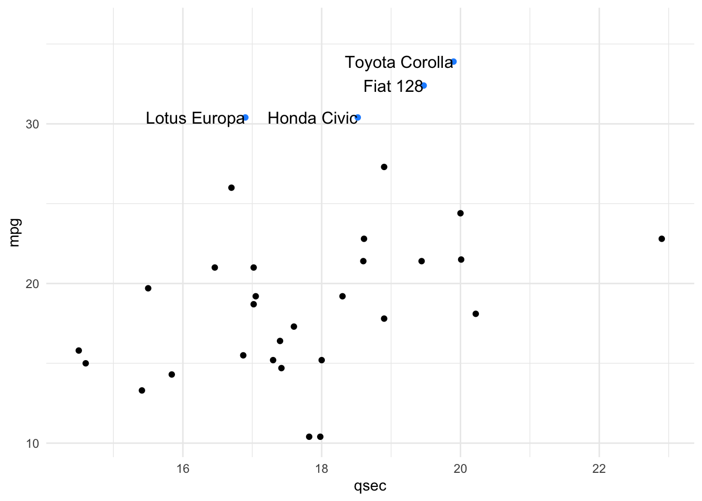
mtcars %>%
mutate(mpg_highlight = case_when(mpg > 30 ~ "high", mpg < 30 ~ "low")) %>%
ggplot(aes(qsec, mpg, label = model)) +
geom_point(aes(color = mpg_highlight)) +
scale_color_manual(values = c("dodgerblue", "black")) +
scale_x_continuous(expand = c(0.05, 0.05)) +
scale_y_continuous(limits = c(NA, 36)) +
geom_dl(data = filter(mtcars, mpg > 30), aes(label = model),
method = list(c("last.points"),
cex = 1)) +
theme_minimal() +
theme(legend.position = "none")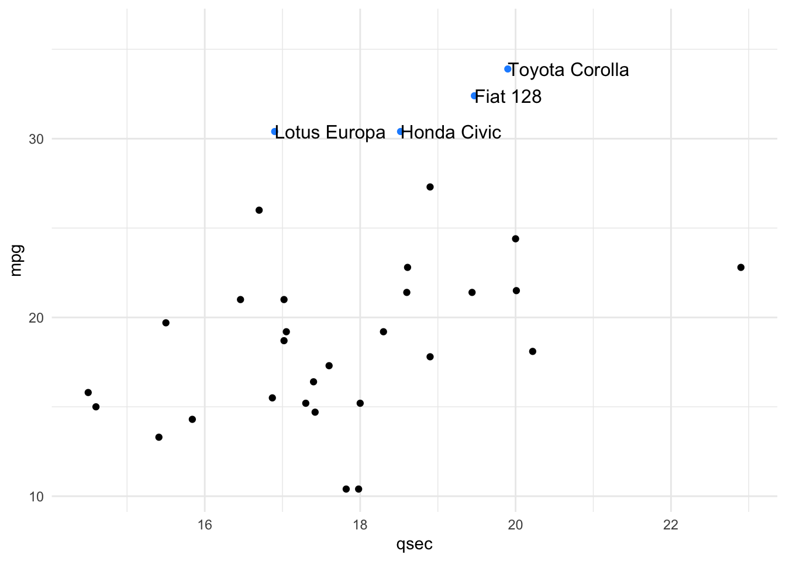
This package is especially useful for labeling lines in a lineplot. There are several methods, one of which is the angled.boxes method. This often negates the need for a legend.
ggplot(mtcars, aes(qsec, mpg, color = cyl, group = cyl)) +
geom_line() +
geom_dl(aes(label = cyl),
method = list(c("angled.boxes"),
cex = 1)) +
theme_minimal()+
theme(legend.position = "none") +
labs(title = "Differences in cars with 4, 6, or 8 cylinders")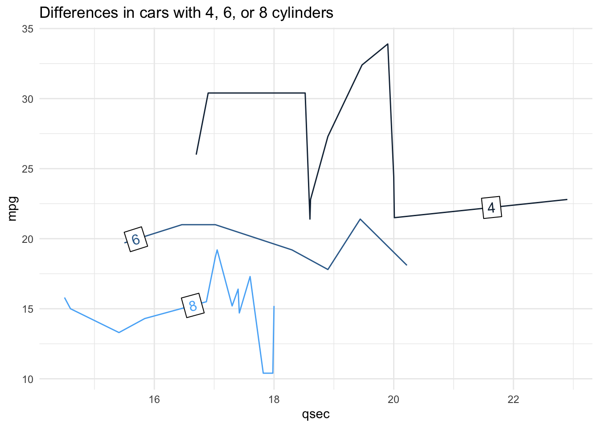
See here for more information about this package.
4.9.3 cowplot
Beyond customization within ggplot2 and labeling points, there are times you’ll want to arrange multiple plots together in a single grid, applying a standard theme across all plots. This often occurs when you’re ready to present or publish your visualizations. When you’re ready to share and present your work with others, you want to be sure your visualizations are conveying the point you want to convey to your viewer in as simple a plot as possible. And, if you’re presenting multiple plots, you typically want to ensure that they have a consistent theme from one plot to the next. This allows the viewer to focus on the data you’re plotting, rather than changes in theme. The cowplot package assists in this process!
4.9.3.1 Theme
The standard theme within cowplot, which works for many types of plots is theme_cowplot(). This theme is very similar to theme_classic(), which removes the background color, removes grid lines, and plots only the x- and y- axis lines (rather than a box around all the data). We’ll use this theme for the examples from this package. However, note that there are a number of additional themes available from the cowplot package. We will use the number 12 within this function to indicate that we want to use a font size of 12.
We’ll continue to use the mtcars dataset for these examples. Here, using the forcats package (which is part of the core tidyverse), we’ll add two new columns: transmission, where we recode the am column to be “automatic” if am == 0 and “manual” if am == 1, and engine, where we recode the vs column to be “v-shaped” if vs == 0 and “straight” if vs == 1.
mtcars <- mtcars %>%
mutate(transmission = fct_recode(as.factor(am), "automatic" = "0", "manual" = "1"),
engine = fct_recode(as.factor(vs), "v-shaped" = "0", "straight" = "1"))We’ll use these data to generate a scatterplot plotting the relationship between 1/4 mile speed (qsec) and gas mileage (mpg). We’ll color the points by this new column transmission and apply theme_cowplot. Finally, we’ll assign this to p1, as we’ll ultimately generate a few different plots.
p1 <- ggplot(mtcars, aes(qsec, mpg, color = transmission)) +
geom_point() +
theme_cowplot(12) +
theme(legend.position = c(0.7, 0.2))
p1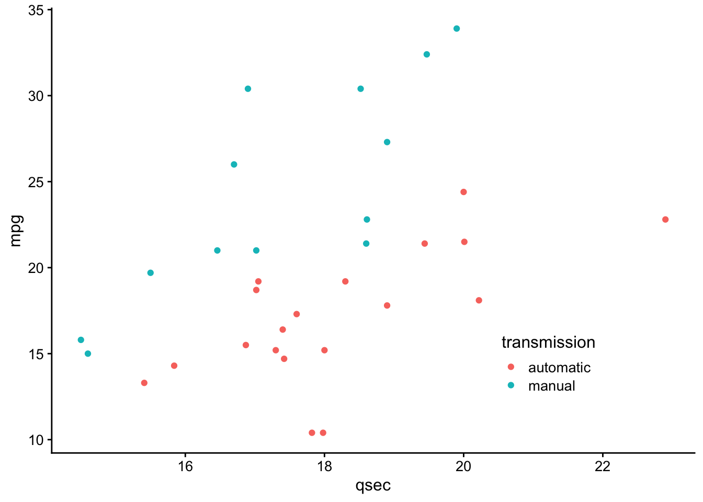
Let’s make a similar plot, but color by engine type. We’ll want to manually change the colors here so that we aren’t using the same colors for transmission and engine. We’ll store this in p2.
p2 <- ggplot(mtcars, aes(qsec, mpg, color = engine)) +
geom_point() +
scale_color_manual(values = c("red", "blue")) +
theme_cowplot(12) +
theme(legend.position = c(0.7, 0.2))
p2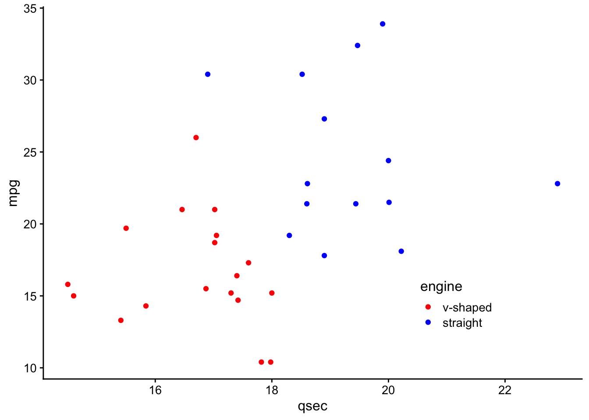
Great - we’ve now got two plots with the same theme and similar appearance. What if we wanted to combine these into a single grid for presentation purposes?
4.9.3.2 Multiple Plots
Aligning plots is made simple within the cowplot package using the align_plots() function:
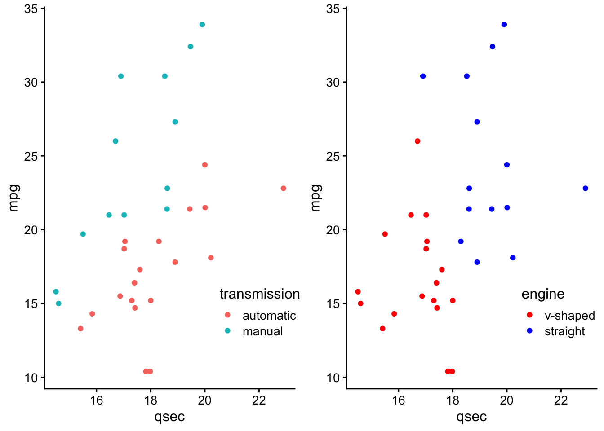
Here, we specify the two plots we’d like to plot on a single grid and we also optionally include how many columns we’d like using the ncol parameter.
To plot these one on top of the other, you could specify for plot_grid() to use a single column. Also note here that we’re aligning the plots vertically with align = "v". The default here is “none”, so if you want the graphs in the grid to be aligned, be sure to specify “h” (horizontally), “v” (vertically) or “hv” (align in both directions) explicitly.
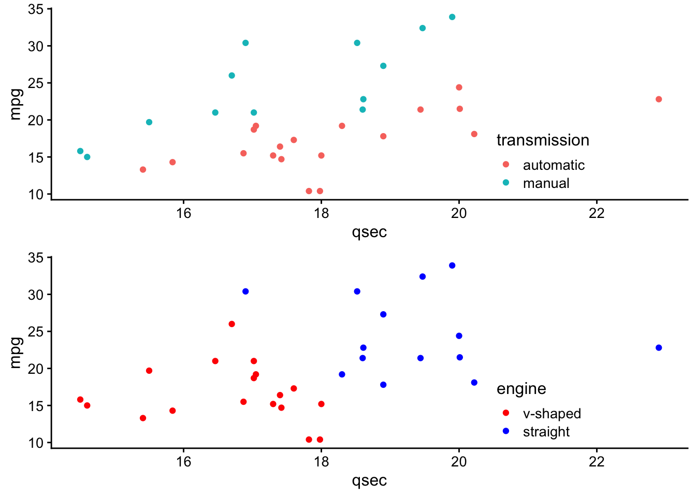
Note that by default, the plots will share the space equally, but it’s also possible to make one larger than the other within the grid using rel_widths and rel_heights.
For example, if you had a faceted plot summarizing the number of cars by transmission and engine (which we’ll call p3):
# generate faceted plot
p3 <- ggplot(mtcars, aes(engine)) +
geom_bar() +
facet_wrap(~transmission) +
scale_y_continuous(expand = expand_scale(mult = c(0, 0.1))) +
theme_minimal_hgrid(12) +
panel_border(color = "black") +
theme(strip.background = element_rect(fill = "gray80"))## Warning: `expand_scale()` is deprecated; use `expansion()` instead.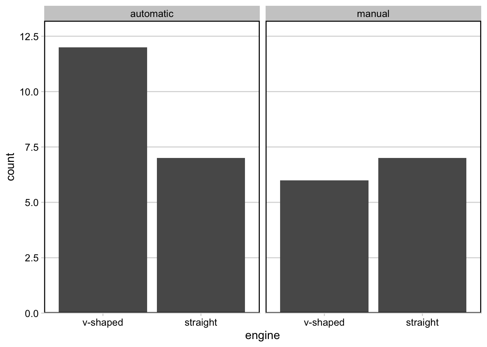
Note that for this plot we’ve chosen a different theme, allowing for horizontal grid lines. This can be helpful when visualizing bar plots.
If we were to plot these next to one another using the defaults, the faceted plot would be squished:
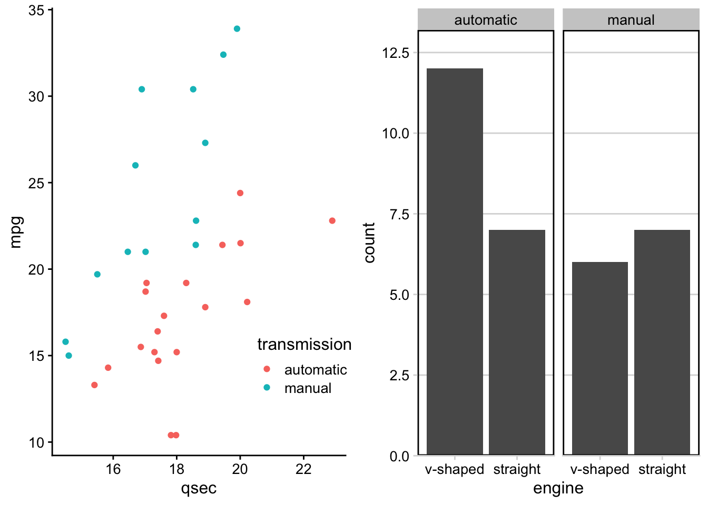
We can use rel_widths to specify the relative width for the plot on the left relative to the plot on the right:
Adding Labels
Within these grids, you’ll often want to label these plots so that you can refer to them in your report or presentation. This can be done using the labels parameter within plot_grid():
Adding Joint Titles
Finally, when generating grids with multiple plots, at times you’ll often want a single title to explain what’s going on across the plots. Here, the process looks slightly confusing, but this is only because we’re putting all of these cowplot pieces together.
Generally, there are three steps:
- Create grid with plots
- Create title object
- Piece title and grid of plots together
# use plot_grid to generate plot with 3 plots together
first_col <- plot_grid(p1, p2, nrow = 2, labels = c('A', 'B'))
three_plots <- plot_grid(first_col, p3, ncol = 2, labels = c('', 'C'), rel_widths = c(1, 1.3))
# specify title
title <- ggdraw() +
# specify title and alignment
draw_label("Transmission and Engine Type Affect Mileage and 1/4 mile time",
fontface = 'bold', x = 0, hjust = 0) +
# add margin on the left of the drawing canvas,
# so title is aligned with left edge of first plot
theme(plot.margin = margin(0, 0, 0, 7))
# put title and plots together
plot_grid(title, three_plots, ncol = 1, rel_heights = c(0.1, 1))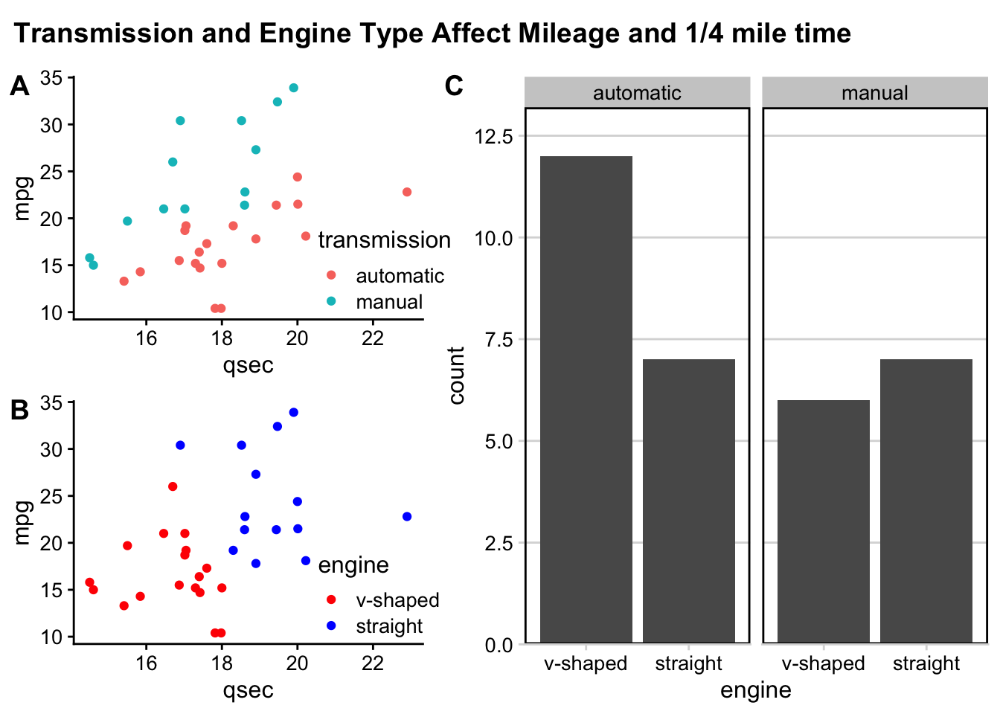
And, just like that we’ve got three plots, labeled, spaced out nicely in a grid, with a shared title, all thanks to the functionality within the cowplot package.
4.9.4 patchwork
The patchwork package is similar to the cowplot package in that they both are helpful for combining plots together. They each allow for different plot modifications, so it is useful to know about both packages.
Instead of requiring a function like plot_grid() of the cowplot package plots can be combined using a few operators, such as "+", "/", and `“|”.
To combine two plots together we can simply add them together with the + sign or place them next to one another using the |:
##
## Attaching package: 'patchwork'## The following object is masked from 'package:cowplot':
##
## align_plots

If we want a plot above another plot we can use the “/” symbol:
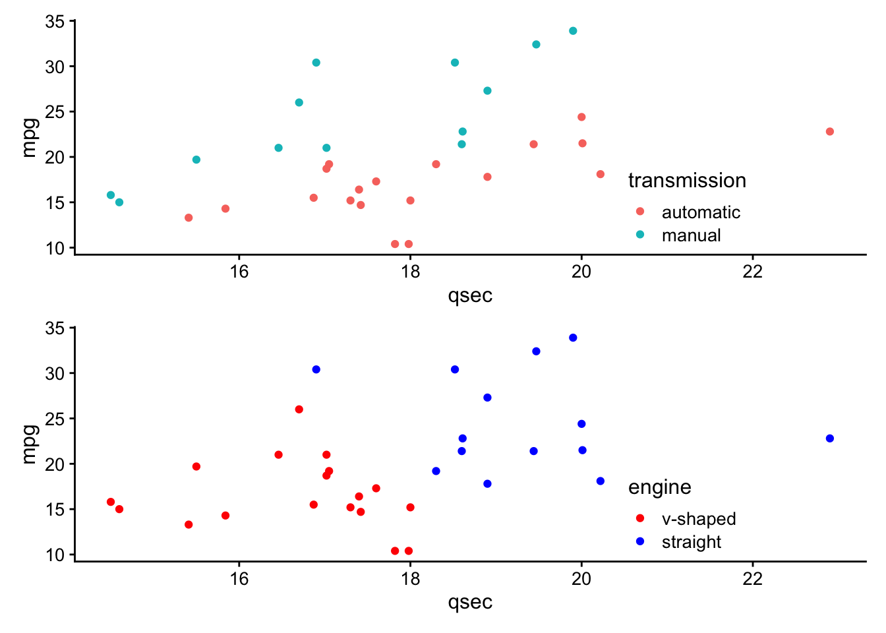 Grouping or nesting plots together using parenthesis can result in two or more plots taking up a single grid space.
Thus, to combine multiple plots in a more complicated layout, one can combine two plots on one row and have a third plot on another row like this:
Otherwise, we would have the following:
You can also empty plot spacers using the plotspacer() function like so:
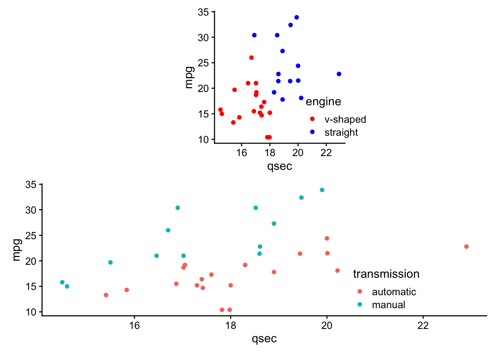
You can modify the widths of the plots using the widths argument of the plot_layout() function. In the following example we will make the width of the plot on the left 3 times that of the plot on the right. Any numeric values will do, it is the ratio of the numbers that make the difference.
Thus, both p1 + p2 + plot_layout(widths = c(2, 1)) and p1 + p2 + plot_layout(widths = c(60, 30)) will result in the same relative size difference between p1 and p2.
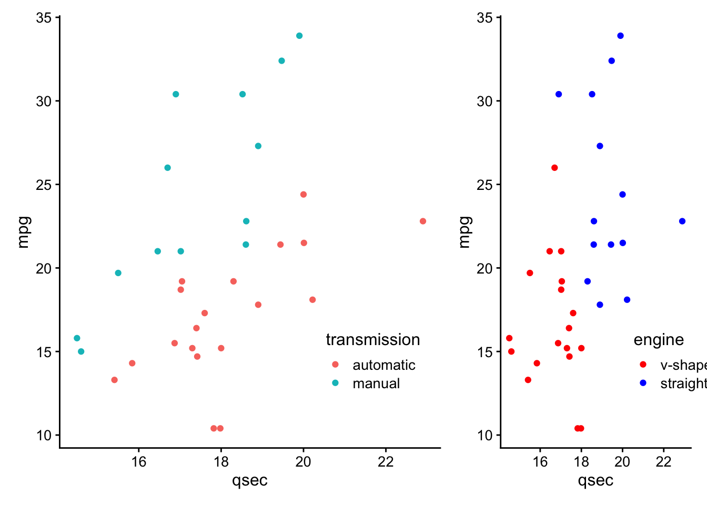

The relative heights of the plots can also be modified using a heights argument with the same function.

This package also allows for modification of legends. For example, legends can be gathered together to one side of the combined plots using the guides = 'collect' argument of the plot_grid() function.
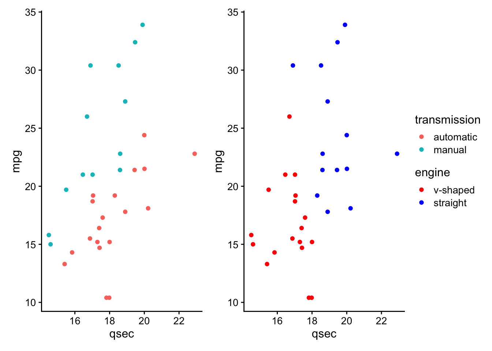
You can also specify the number of columns or rows using this same function with the ncol or nrow as you would with facet_wrap() of the ggplot2 package, where plots are added to complete a row before they will be added to a new row. For example, the following will result in an empty 2nd row.
However, the byrow = FALSE argument can disrupt this behavior and result in an empty 2nd column:
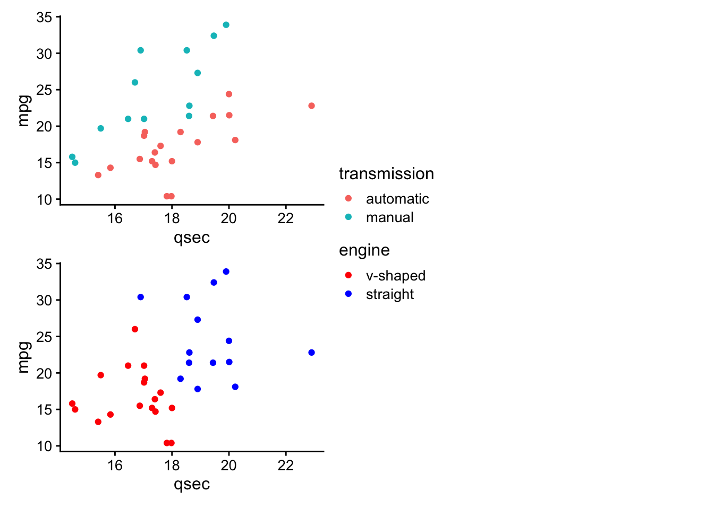
In this case the columns will be preferentially completed before placing a plot in a new column.
We can also use the package to change the theme specifications of specific plots. By default the plot just prior to the theme() function will be the only plot changed.
Using the *, themes can be added to all plots that are nested together.
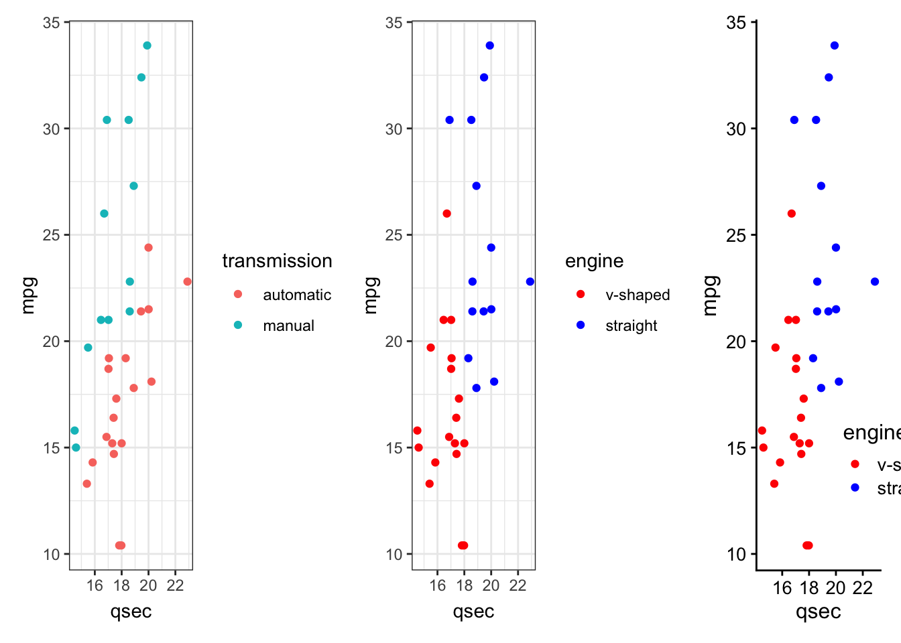
The & adds themes to all plots.
Annotations for all the plots combined can also be added using the plot_annotation() function, which can also take theme() function specifications with the theme argument.
(p1 + p2) + p3 + theme(axis.text.x = element_text(angle = 90)) +
plot_annotation(title = "Plot title for all 3 plots",
theme = theme(plot.title = element_text(hjust = 0.5)))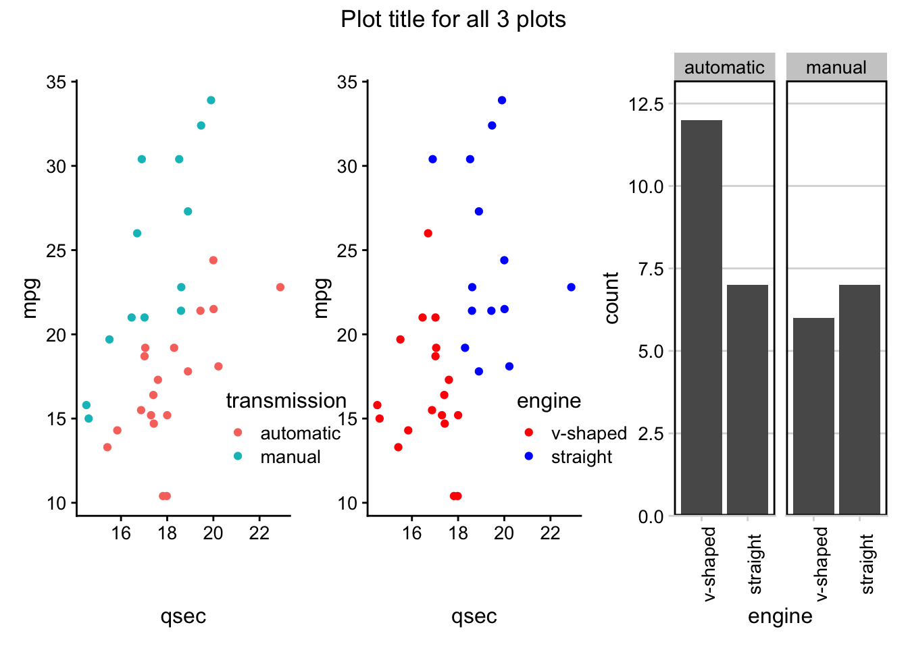
See here for more information about the patchwork package.
4.9.5 gganimate
The final ggplot2 extension we’ll discuss here is gganmiate. This extends the grammar of graphics implemented in the ggplot2 package to work with animated plots. To get started, you’ll need to install and load the package:
The gganimate package adds functionality by providing a number of these grammar classes. Across the animation being generated, the following classes are made available, with each classes’ corresponding functionality:
transition_*() | specifies how data should transition
enter_*()/exit_*() | specifies how data should appear and disappear
ease_aes() | specifies how different aesthetics should be eased during transitions
view_*() | specifies how positional scales should change
shadow_*() | specifies how points from a previous frame should be displayed in current frame
We’ll walk through these grammar classes using the mtcars dataset.
4.9.5.1 Example: mtcars
As noted, gganimate builds on top of the functionality within ggplot2, so the code should look pretty familiar by now.
First, using the mtcars dataset we generate a static boxplot looking at the relationship between the number of cylinders a car has (cyl) and its gas mileage (mpg).
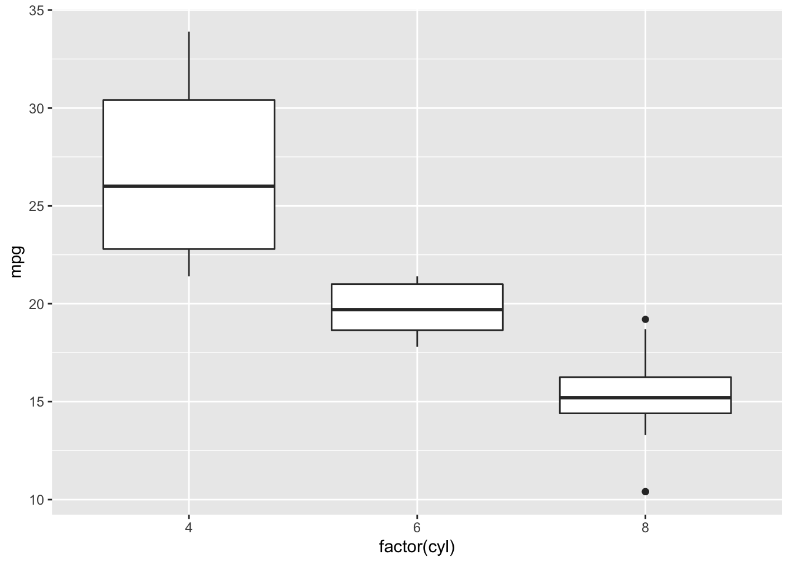
But what if we wanted to understand the relationship between those two variables and the number of gears a car has (gear)?
One option would be to use faceting:
Alternatively, we could animate the plot, using gganimate so that on a single plot we rotate between each of these three plots.
4.9.5.1.1 Transitions
We’ll transition in this example between frames by gear:
# animate it!
mtcars %>%
mutate(gear = factor(gear),
cyl = factor(cyl)) %>%
ggplot() +
geom_boxplot(aes(cyl, mpg)) +
transition_manual(gear)Note that here, transition_manual() is a new grammar class that we add right on top of our ggplot2 plot code! Within this grammar class, we specify the variable upon which we’d like the transition in the animation to occur.
This means that the number of frames in the animation will be the number of levels in the variable by which you’re transitioning. Here, there will be 3 frames, as there are three different levels of gear in the mtcars dataset.
transition_manual() is not the only option for transition. In fact, there are a number of different transition_* options, depending upon your animation needs. One of the most commonly used is transition_states(). The animation will plot the same information as the example above; however, it allows for finer tune control of the animation
# animate it!
anim <- ggplot(mtcars) +
geom_boxplot(aes(factor(cyl), mpg)) +
transition_states(gear,
transition_length = 2,
state_length = 1)
animNote here that we’ve stored the output from transition_states in the object anim. We’ll build on this object below.
4.9.5.1.2 Labeling
Currently, it’s hard to know which frame corresponds to which gear. To make this easier on the viewer, let’s label our animation:
Note that we’re referring to the appropriate gear within the animation frame by specifying {closest_state}.
4.9.5.1.3 Easing
Easing determines how the change from one value to another should occur. The default is linear, but there are other options that will control the appearance of progression in your animation. for example, ‘cubic-in-out’ allows for the start and end of the animation to have a smoother look.
There are a number of easing functions, all of which are listed within the documentation, which can be viewed, as always, using the ? help function: ?ease_aes.
4.9.5.1.4 Enter & Exit
Building on top of easing, we can also control how the data appears (enters) and disappears (exits), using enter_* and exit_*:
The changes are subtle but you’ll notice that on transition the data fades in to appear and shrinks upon exit.
4.9.5.1.5 Position Scales
To demonstrate how changing positional scales can be adjusted, let’s take a look at a scatterplot. Here, we’re plotting the relationship between 1/4 mile speed and miles per gallon and we’ll be transitioning between gear.
The static plot would be as follows

However, upon adding animation, we see how the data changes by gear.
# animate it!
scat <- ggplot(mtcars) +
geom_point(aes(qsec, mpg)) +
transition_states(gear,
transition_length = 2,
state_length = 1) +
labs(title = 'Now showing gear: {closest_state}')
scatHowever, the x- and y-axes remain constant throughout the animation.
If you wanted to allow these positional scales to adjust between each gear level, you could use view_step:
4.9.5.2 Example: gapminder
One of the most famous examples of an animated plot uses the gapminder dataset. This dataset includes economic data for countries all over the world. The animated plot here demonstrates the relationship between GDP (per capita) and life expectancy over time, by continent. Note that the year whose data is being displayed is shown at the top left portion of the plot.
# install.packages("gapminder")
library(gapminder)
gap <- ggplot(gapminder, aes(gdpPercap, lifeExp, size = pop, colour = country)) +
geom_point(alpha = 0.7, show.legend = FALSE) +
scale_colour_manual(values = country_colors) +
scale_size(range = c(2, 12)) +
scale_x_log10() +
facet_wrap(~continent, ncol = 5) +
theme_half_open(12) +
panel_border() +
# animate it!
labs(title = 'Year: {frame_time}', x = 'GDP per capita', y = 'life expectancy') +
transition_time(year)
gap
Note that in this example, we’re now using transition_time() rather than transition_states(). This is a variant of transition_states() that is particularly useful when the states represent points in time, such as the years we’re animating through in the plot above. The transition length is set to correspond to the time difference between the points in the data.
4.9.5.2.1 Shadow
However, what if we didn’t want the data to completely disappear from one frame to the next and instead wanted to see the pattern emerge over time? We didn’t demonstrate this using the mtcars dataset because each observation in that dataset is a different car. However, here, with the gapminder dataset, where we’re looking at a trend over time, it makes more sense to include a trail
To do this, we would use shadow_*. Here, we’ll use shadow_trail() to see a trail of the data from one frame to the next:

Here, distance specifies the temporal distance between the frames to show and alpha specifies the transparency of the trail, so that the current frame’s data is always discernible.
4.10 Case Studies
At this point, we’ve done a lot of work with our case studies. We’ve introduced the case studies, read them into R, and have wrangled the data into a usable format. Now, we get to peak at the data using visualizations to better understand each dataset’s observations and variables!
Let’s start by loading our wrangled tidy data that we previously saved:
load(here::here("data", "tidy_data", "case_study_1_tidy.rda"))
load(here::here("data", "tidy_data", "case_study_2_tidy.rda"))4.10.1 Case Study #1: Health Expenditures
We’ve now got the data in order so that we can start to explore the relationships between the variables contained in the health care dataset (hc) to answer our questions of interest:
- Is there a relationship between healthcare coverage and healthcare spending in the United States?
- How does the spending distribution change across geographic regions in the United States?
- Does the relationship between healthcare coverage and healthcare spending in the United States change from 2013 to 2014?
## # A tibble: 612 x 10
## Location year type tot_coverage abb region tot_spending tot_pop
## <chr> <int> <chr> <int> <chr> <fct> <dbl> <int>
## 1 Alabama 2013 Empl… 2126500 AL South 33788 4763900
## 2 Alabama 2013 Non-… 174200 AL South 33788 4763900
## 3 Alabama 2013 Medi… 869700 AL South 33788 4763900
## 4 Alabama 2013 Medi… 783000 AL South 33788 4763900
## 5 Alabama 2013 Othe… 85600 AL South 33788 4763900
## 6 Alabama 2013 Unin… 724800 AL South 33788 4763900
## 7 Alabama 2014 Empl… 2202800 AL South 35263 4768000
## 8 Alabama 2014 Non-… 288900 AL South 35263 4768000
## 9 Alabama 2014 Medi… 891900 AL South 35263 4768000
## 10 Alabama 2014 Medi… 718400 AL South 35263 4768000
## # … with 602 more rows, and 2 more variables: prop_coverage <dbl>,
## # spending_capita <dbl>As a reminder, we have state level data, broken down by year and type of insurance. For each, we have the total number of individuals who have health care coverage (tot_coverage), the amount spent on coverage (tot_spending), the proportion of individuals covered (prop_coverage), and the amount spent per capita (spending_capita). Additionally, we have the state name (Location), the two letter state abbreviation (abb) and the region of the United States where the state is located (region). Let’s get visualizing!
4.10.1.1 Exploratory Data Analysis (EDA)
To first get a sense of what information we do and do not have, the visdat package can be very helpful. This package uses ggplot2 to visualize missingness in a data frame. For example, vis_dat() takes the data frame as an input and visualizes the observations on the left and the variables across the top. Solid colors indicate that a value is present. Each type of variable is represented by a different color. Grey lines indicate missing values.
We now have a sense that a few states, for some years are missing coverage data, which also affects the ability to calculate proportion covered.
To see these values highlighted more specifically, we can use the related vis_miss() function.
Here we see that missing values only occur 0.6% of the time, with 3.1% of the observations missing entries for tot_coverage and prop_coverage. So, all in all, there is not a lot of missing data, but we still want to be sure we understand where missingness occurs before answering our questions.
Let’s use dplyr to see which observations have missing data:
## # A tibble: 19 x 10
## Location year type tot_coverage abb region tot_spending tot_pop
## <chr> <int> <chr> <int> <chr> <fct> <dbl> <int>
## 1 Arizona 2013 Othe… NA AZ West 41481 6603100
## 2 Arizona 2014 Othe… NA AZ West 43356 6657200
## 3 Distric… 2013 Othe… NA DC South 7443 652100
## 4 Distric… 2014 Othe… NA DC South 7871 656900
## 5 Indiana 2014 Othe… NA IN North… 54741 6477500
## 6 Kansas 2013 Othe… NA KS North… 21490 2817600
## 7 Kansas 2014 Othe… NA KS North… 22183 2853000
## 8 Kentucky 2014 Othe… NA KY South 35323 4315700
## 9 Massach… 2013 Othe… NA MA North… 68899 6647700
## 10 Massach… 2014 Othe… NA MA North… 71274 6658100
## 11 New Ham… 2014 Othe… NA NH North… 12742 1319700
## 12 New Jer… 2013 Othe… NA NJ North… 75148 8807400
## 13 North D… 2013 Othe… NA ND North… 6795 714500
## 14 Oklahoma 2013 Othe… NA OK South 28097 3709400
## 15 Rhode I… 2014 Othe… NA RI North… 10071 1048200
## 16 Tenness… 2013 Othe… NA TN South 46149 6400200
## 17 Tenness… 2014 Othe… NA TN South 48249 6502000
## 18 West Vi… 2013 Othe… NA WV South 16622 1822000
## 19 Wiscons… 2014 Othe… NA WI North… 50109 5747200
## # … with 2 more variables: prop_coverage <dbl>, spending_capita <dbl>Ah, so we see that the “Other” type of coverage is missing in both 2013 and 2014 for a subset of states. We’ll be focusing on the non-“Other” types of healthcare coverage, so this shouldn’t pose a problem, but is good to know!
Taking this one step further, let’s skim the entire dataset to get a sense of the information stored in each variable:
| Name | hc |
| Number of rows | 612 |
| Number of columns | 10 |
| _______________________ | |
| Column type frequency: | |
| character | 3 |
| factor | 1 |
| numeric | 6 |
| ________________________ | |
| Group variables | None |
Variable type: character
| skim_variable | n_missing | complete_rate | min | max | empty | n_unique | whitespace |
|---|---|---|---|---|---|---|---|
| Location | 0 | 1 | 4 | 20 | 0 | 51 | 0 |
| type | 0 | 1 | 8 | 12 | 0 | 6 | 0 |
| abb | 0 | 1 | 2 | 2 | 0 | 51 | 0 |
Variable type: factor
| skim_variable | n_missing | complete_rate | ordered | n_unique | top_counts |
|---|---|---|---|---|---|
| region | 0 | 1 | FALSE | 4 | Sou: 204, Wes: 156, Nor: 144, Nor: 108 |
Variable type: numeric
| skim_variable | n_missing | complete_rate | mean | sd | p0 | p25 | p50 | p75 | p100 | hist |
|---|---|---|---|---|---|---|---|---|---|---|
| year | 0 | 1.00 | 2013.50 | 0.50 | 2013.00 | 2013.00 | 2013.50 | 2014.00 | 2014.00 | ▇▁▁▁▇ |
| tot_coverage | 19 | 0.97 | 1059391.91 | 1864110.89 | 9900.00 | 135700.00 | 436800.00 | 1036800.00 | 17747300.00 | ▇▁▁▁▁ |
| tot_spending | 0 | 1.00 | 49004.39 | 54031.44 | 4639.00 | 12742.00 | 33939.00 | 60364.00 | 291989.00 | ▇▂▁▁▁ |
| tot_pop | 0 | 1.00 | 6172245.10 | 6983404.37 | 572000.00 | 1610200.00 | 4357900.00 | 6866000.00 | 38701300.00 | ▇▂▁▁▁ |
| prop_coverage | 19 | 0.97 | 0.17 | 0.16 | 0.01 | 0.06 | 0.13 | 0.18 | 0.61 | ▇▅▁▁▂ |
| spending_capita | 0 | 1.00 | 8246.17 | 1263.98 | 5676.52 | 7395.76 | 8049.26 | 8993.86 | 11982.04 | ▂▇▅▃▁ |
At a glance, by looking at the hist column of the output for our numeric/integer variables, we see that there is a long right tail in tot_coverage and tot_pop.
We see that proportion coverage varies from 0.0054 (p0) to 0.61 (p100). So, we’ll want to know which states are at each end of the spectrum here.
We also see that for tot_spending, the mean is 49004 and the median (p50) is slightly lower and that this variable also has a long right tail (hist).
We also know that these data come from two different years, so we can group by year and again summarize the data:
| Name | Piped data |
| Number of rows | 612 |
| Number of columns | 10 |
| _______________________ | |
| Column type frequency: | |
| character | 3 |
| factor | 1 |
| numeric | 5 |
| ________________________ | |
| Group variables | year |
Variable type: character
| skim_variable | year | n_missing | complete_rate | min | max | empty | n_unique | whitespace |
|---|---|---|---|---|---|---|---|---|
| Location | 2013 | 0 | 1 | 4 | 20 | 0 | 51 | 0 |
| Location | 2014 | 0 | 1 | 4 | 20 | 0 | 51 | 0 |
| type | 2013 | 0 | 1 | 8 | 12 | 0 | 6 | 0 |
| type | 2014 | 0 | 1 | 8 | 12 | 0 | 6 | 0 |
| abb | 2013 | 0 | 1 | 2 | 2 | 0 | 51 | 0 |
| abb | 2014 | 0 | 1 | 2 | 2 | 0 | 51 | 0 |
Variable type: factor
| skim_variable | year | n_missing | complete_rate | ordered | n_unique | top_counts |
|---|---|---|---|---|---|---|
| region | 2013 | 0 | 1 | FALSE | 4 | Sou: 102, Wes: 78, Nor: 72, Nor: 54 |
| region | 2014 | 0 | 1 | FALSE | 4 | Sou: 102, Wes: 78, Nor: 72, Nor: 54 |
Variable type: numeric
| skim_variable | year | n_missing | complete_rate | mean | sd | p0 | p25 | p50 | p75 | p100 | hist |
|---|---|---|---|---|---|---|---|---|---|---|---|
| tot_coverage | 2013 | 9 | 0.97 | 1052927.61 | 1863158.94 | 9900.00 | 132300.00 | 426300.00 | 1034500.00 | 17747300.00 | ▇▁▁▁▁ |
| tot_coverage | 2014 | 10 | 0.97 | 1065878.04 | 1868198.24 | 9900.00 | 137700.00 | 450150.00 | 1056725.00 | 17703700.00 | ▇▁▁▁▁ |
| tot_spending | 2013 | 0 | 1.00 | 47757.31 | 52637.29 | 4639.00 | 12392.00 | 33468.00 | 60364.00 | 278168.00 | ▇▂▁▁▁ |
| tot_spending | 2014 | 0 | 1.00 | 50251.47 | 55448.72 | 4856.00 | 12742.00 | 35299.00 | 62847.00 | 291989.00 | ▇▂▁▁▁ |
| tot_pop | 2013 | 0 | 1.00 | 6145121.57 | 6945677.64 | 582200.00 | 1600600.00 | 4400100.00 | 6866000.00 | 38176400.00 | ▇▂▁▁▁ |
| tot_pop | 2014 | 0 | 1.00 | 6199368.63 | 7032201.22 | 572000.00 | 1610200.00 | 4315700.00 | 7085000.00 | 38701300.00 | ▇▂▁▁▁ |
| prop_coverage | 2013 | 9 | 0.97 | 0.17 | 0.16 | 0.01 | 0.05 | 0.13 | 0.18 | 0.60 | ▇▆▁▁▂ |
| prop_coverage | 2014 | 10 | 0.97 | 0.17 | 0.16 | 0.01 | 0.06 | 0.12 | 0.18 | 0.61 | ▇▅▁▁▂ |
| spending_capita | 2013 | 0 | 1.00 | 8064.53 | 1228.01 | 5676.52 | 7210.56 | 7842.66 | 8883.00 | 11413.89 | ▂▇▅▃▁ |
| spending_capita | 2014 | 0 | 1.00 | 8427.80 | 1275.27 | 6007.03 | 7544.68 | 8242.67 | 9378.16 | 11982.04 | ▂▇▃▃▁ |
At a glance, there doesn’t appear to be a huge difference in the variables from one year to the next, but we’ll explore this again in a bit.
With at least some understanding of the data in our dataset, let’s start generating exploratory plots that will help us answer each of our questions of interest.
4.10.1.2 Q1: Relationship between coverage and spending?
To answer the question:
Is there a relationship between healthcare coverage and healthcare spending in the United States?
We’ll have to visualize coverage and spending data across the United States.
And, to understand the relationship between two continuous variables - coverage and spending - a scatterplot will be the most effective visualization.
We’ll first look at a scatterplot:
hc %>%
filter(type == "Employer",
year == "2013") %>%
ggplot(aes(x = spending_capita,
y = prop_coverage)) +
geom_point() +
labs(x = "spending per capita",
y = "coverage proportion")We see that there appears to be some relationship, with those states that spend more per capita also having higher proportions of their population having healthcare coverage.
We can continue to improve this plot to better understand the underlying data. For example, we can add a best-fit line using geom_smooth() to visualize the magnitude of the linear relationship:
# generate scatterplot with fit line
hc %>%
filter(type == "Employer",
year == "2013") %>%
ggplot(aes(x = spending_capita,
y = prop_coverage)) +
geom_point() +
labs(x = "spending per capita",
y = "coverage proportion") +
geom_smooth(method = "lm", col = "red")## `geom_smooth()` using formula 'y ~ x'Beyond that, we likely want to know which point represents which state, so we can add state labels:
# add state abbreviation labels
hc %>%
filter(type == "Employer",
year == "2013") %>%
ggplot(aes(x = spending_capita,
y = prop_coverage)) +
geom_point() +
labs(x = "spending per capita",
y = "coverage proportion") +
geom_smooth(method = "lm", col = "red") +
geom_text(aes(label=abb),
nudge_x = 150)## `geom_smooth()` using formula 'y ~ x'From there, it’d likely be helpful to have information from each region:
# color by region
hc %>%
filter(type == "Employer",
year == "2013") %>%
ggplot(aes(x = spending_capita,
y = prop_coverage,
color = region)) +
geom_point() +
labs(x = "spending per capita",
y = "coverage proportion") +
geom_smooth(method = "lm", col = "red") +
geom_text(aes(label=abb),
nudge_x = 150,
show.legend = FALSE)## `geom_smooth()` using formula 'y ~ x'So far, we’ve only been focusing on data from 2013. What about looking at data from both 2013 and 2014? We can do that using facet_wrap():
# color by region
hc %>%
filter(type == "Employer") %>%
ggplot(aes(x = spending_capita,
y = prop_coverage,
color = region)) +
geom_point() +
facet_wrap(~year) +
labs(x = "spending per capita",
y = "coverage proportion") +
geom_smooth(method = "lm", col = "red") +
geom_text(aes(label=abb),
nudge_x = 150,
show.legend = FALSE)## `geom_smooth()` using formula 'y ~ x'
We see that the overall trend holds, but there has been some movement. For example, we see at a glance that DC has a higher proportion of its population covered in 2014 relative to 2013, while MA saw a drop in coverage. UT appears to be an outlier in both years having low spending but a high proportion of individuals covered.
Beyond “Employer”-held healthcare coverage, let’s look at the other types of coverage data we have. Here, we’ll facet by type, rather than year, again focusing on just data from 2013.
# visualize 2013 data by type
hc %>%
filter(year == "2013") %>%
ggplot(aes(x = spending_capita,
y = prop_coverage,
color = region)) +
geom_point() +
facet_wrap(~type) +
labs(x = "spending per capita",
y = "coverage proportion") +
geom_smooth(method = "lm", col = "red") +
geom_text(aes(label=abb),
nudge_x = 150,
show.legend = FALSE)## `geom_smooth()` using formula 'y ~ x'From these data, we see that Employer health care coverage is the most popular way in which individuals receive their health insurance across all states. We also see a flat or positive relationship for all other types of insurance, except for “Uninsured”. There, as makes sense, we see that the more money spent per capita the fewer individuals the state has without insurance.
We can quickly peak at the data from 2014 to be sure the same general patterns hold:
# visualize 2014 data by type
hc %>%
filter(year == "2014") %>%
ggplot(aes(x = spending_capita,
y = prop_coverage,
color = region)) +
geom_point() +
facet_wrap(~type) +
labs(x = "spending per capita",
y = "coverage proportion") +
geom_smooth(method = "lm", col = "red") +
geom_text(aes(label=abb),
nudge_x = 150,
show.legend = FALSE)## `geom_smooth()` using formula 'y ~ x'The same general patterns hold in 2014 as we saw in 2013; however, the patterns are not exactly the same.
With these plots we have a pretty good understanding of the relationship between spending and coverage across this country when it comes to health care.
Let’s save some of these plots for later:
pdf(here::here("figures", "exploratory", "2013and2014_spending_and_coverage.pdf"))
hc %>%
filter(type == "Employer") %>%
ggplot(aes(x = spending_capita,
y = prop_coverage,
color = region)) +
geom_point() +
facet_wrap(~year) +
labs(x = "spending per capita",
y = "coverage proportion") +
geom_smooth(method = "lm", col = "red") +
geom_text(aes(label=abb),
nudge_x = 150,
show.legend = FALSE)## `geom_smooth()` using formula 'y ~ x'## quartz_off_screen
## 2pdf(here::here("figures", "exploratory", "2013_coverage_type.pdf"))
hc %>%
filter(year == "2013") %>%
ggplot(aes(x = spending_capita,
y = prop_coverage,
color = region)) +
geom_point() +
facet_wrap(~type) +
labs(x = "spending per capita",
y = "coverage proportion") +
geom_smooth(method = "lm", col = "red") +
geom_text(aes(label=abb),
nudge_x = 150,
show.legend = FALSE)## `geom_smooth()` using formula 'y ~ x'## Warning: Removed 9 rows containing non-finite values (stat_smooth).## Warning: Removed 9 rows containing missing values (geom_point).## Warning: Removed 9 rows containing missing values (geom_text).## quartz_off_screen
## 2pdf(here::here("figures", "exploratory", "2014_coverage_type.pdf"))
hc %>%
filter(year == "2014") %>%
ggplot(aes(x = spending_capita,
y = prop_coverage,
color = region)) +
geom_point() +
facet_wrap(~type) +
labs(x = "spending per capita",
y = "coverage proportion") +
geom_smooth(method = "lm", col = "red") +
geom_text(aes(label=abb),
nudge_x = 150,
show.legend = FALSE)## `geom_smooth()` using formula 'y ~ x'## Warning: Removed 10 rows containing non-finite values (stat_smooth).## Warning: Removed 10 rows containing missing values (geom_point).## Warning: Removed 10 rows containing missing values (geom_text).## quartz_off_screen
## 24.10.1.3 Q2: Spending Across Geographic Regions?
To answer the question:
Which US states spend the most and which spend the least on healthcare? How does the spending distribution change across geographic regions in the United States?
We’ll want to visualize healthcare spending across regions of the US.
We saw in the previous plots that there are some regional effects when it comes to spending, as the states from the different regions tended to cluster in the previous plot. But, let’s look at this explicitly now.
We’re looking to visualize a continuous variable (spending_capita) by a categorical variable (region), so a boxplot is always a good place to start:
# generate boxplot
hc %>%
ggplot(aes(x = region,
y = spending_capita)) +
geom_boxplot() +
labs(y = "spending per capita")Here, we get a sense of the overall trend, seeing that states in the Northeast tend to spend the most on health care, while states in the West spend the least.
But, sometimes, it can be helpful to see the distribution of points along with the boxplot, so we can add those onto the plot. We’ll use geom_jitter() rather than geom_point() here so that we can see all the points without overlap. Note that we also use alpha = 0.2 to increase the transparency of the points and outlier.shape = NA to hide the outliers on the boxplot. This way, each observation is only plotted a single time:
# add data points to boxplot
hc %>%
filter(type == "Employer") %>%
ggplot(aes(x = region,
y = spending_capita)) +
geom_boxplot(outlier.shape = NA) +
geom_jitter(alpha = 0.2) +
labs(y = "spending per capita")This gives us a sense of the variation in spending for states in each region. Of note, there are more outliers in the South and West, with a few states spending more on health care than even states in the Northeast, where spending tends to be higher.
With this we have a good sense of the regional effects of spending across the United states.
4.10.1.4 Q3: Coverage and Spending Change Over Time?
To answer the question:
Does the relationship between healthcare coverage and healthcare spending in the United States change from 2013 to 2014?
we’ll need to visualize a whole bunch of variables: coverage, spending, year and type of insurance. We can return to a scatterplot again, but now we’ll put all these pieces we looked at separately in Q1 together at once to answer this temporal question visually.
We won’t filter the dataset but will instead use facet_grid(), which “forms a matrix of panels defined by row and column faceting variables”:
facet_wrap(), which we used previously, typically utilizes screen space better than facet_grid(); however, in this case, where we want 2013 and 2014 to each be in a separate row, facet_grid() is the better visual choice.
# color by region
hc %>%
ggplot(aes(x = spending_capita,
y = prop_coverage,
color = region)) +
geom_point() +
labs(x = "spending per capita",
y = "coverage proportion") +
geom_smooth(method = "lm", col = "red") +
facet_grid(year~type)## `geom_smooth()` using formula 'y ~ x'With this, output the top row are the data from 2013 and the bottom from 2014. We can then visually compare the top plot to the bottom plot for each time of insurance.
Visually, we can start to get a sense that a few things changed from 2013 to 2014. For example, as we saw previously, individual states changed from one year to the next, but overall patterns seem to hold pretty steady between these two years.
We were able to start answering all our questions of interest with a number of quick plots using ggplot2.
Now, of course there are many ways in which we could customize each of these plots to be “publication-ready,” but for now, we’ll stop with this case study having gained a lot of new insight into these data and answers to our questions we now have, simply from generating a few exploratory plots.
4.10.2 Case Study #2: Firearms
For our second case study, we’re interested in the following question:
At the state-level, what is the relationship between firearm legislation strength and annual rate of fatal police shootings?
In the previous course, we wrangled the data into a single, helpful data frame: firearms.
## # A tibble: 51 x 15
## NAME white black hispanic male total_pop violent_crime brady_scores
## <chr> <dbl> <dbl> <dbl> <dbl> <dbl> <dbl> <dbl>
## 1 alab… 69.5 26.7 4.13 48.5 4850858 472. -18
## 2 alas… 66.5 3.67 6.82 52.4 737979 730. -30
## 3 ariz… 83.5 4.80 30.9 49.7 6802262 410. -39
## 4 arka… 79.6 15.7 7.18 49.1 2975626 521. -24
## 5 cali… 73.0 6.49 38.7 49.7 39032444 426. 76
## 6 colo… 87.6 4.47 21.3 50.3 5440445 321 22
## 7 conn… 80.9 11.6 15.3 48.8 3593862 218. 73
## 8 dela… 70.3 22.5 8.96 48.4 944107 499 41
## 9 dist… 44.1 48.5 10.7 47.4 672736 1269. NA
## 10 flor… 77.7 16.9 24.7 48.9 20268567 462. -20.5
## # … with 41 more rows, and 7 more variables: gunshot_tally <int>,
## # gunshot_filtered <int>, gunshot_rate <dbl>, unemployment_rate <dbl>,
## # unemployment_rank <int>, density <dbl>, ownership <dbl>This dataset contains state level information about firearm ownership (broken down by ethnicity and gender), the population of each state (total_pop), the number of violent crimes (violent_crime), the “total state points” from the Brady Scorecard (brady_scores), the number of gunshots (gunshot_tally), the number of gunshots from armed, non-white, male individuals (gunshot_filtered), the annualized rate per 1,000,000 residents (gunshot_rate), the unemployment rate and unemployment_rank, population density (density), and firearm ownership as a percent of firearm suicides to all suicides (ownership).
4.10.2.1 Exploratory Data Analysis (EDA)
Similar to how we approached the health care case study, let’s get an overall understanding of the data in our dataset, starting with understanding where data are missing in our dataset:
We see that we have data for all 50 states (and Washington, D.C.) for most variables in our dataset; however, we’re missing information for one state when it comes to gunshot information and another state when it comes to Brady scores and ownership by suicide rates.
Additionally, we see that most of our variables are numeric (either integers or numeric) while the state name (NAME) is a character, confirming what we expect for these data.
We will also again use skim() to get a better sense of the values in our dataset:
| Name | firearms |
| Number of rows | 51 |
| Number of columns | 15 |
| _______________________ | |
| Column type frequency: | |
| character | 1 |
| numeric | 14 |
| ________________________ | |
| Group variables | None |
Variable type: character
| skim_variable | n_missing | complete_rate | min | max | empty | n_unique | whitespace |
|---|---|---|---|---|---|---|---|
| NAME | 0 | 1 | 4 | 20 | 0 | 51 | 0 |
Variable type: numeric
| skim_variable | n_missing | complete_rate | mean | sd | p0 | p25 | p50 | p75 | p100 | hist |
|---|---|---|---|---|---|---|---|---|---|---|
| white | 0 | 1.00 | 78.83 | 13.17 | 26.02 | 71.95 | 82.15 | 87.65 | 94.95 | ▁▁▂▆▇ |
| black | 0 | 1.00 | 11.70 | 10.89 | 0.55 | 3.56 | 8.23 | 16.26 | 48.52 | ▇▃▂▁▁ |
| hispanic | 0 | 1.00 | 11.55 | 10.18 | 1.49 | 4.92 | 9.08 | 13.15 | 48.20 | ▇▂▁▁▁ |
| male | 0 | 1.00 | 49.40 | 0.85 | 47.44 | 48.78 | 49.28 | 49.78 | 52.37 | ▁▇▇▁▁ |
| total_pop | 0 | 1.00 | 6294898.80 | 7191254.03 | 586102.00 | 1744545.50 | 4422057.00 | 6977540.00 | 39032444.00 | ▇▂▁▁▁ |
| violent_crime | 0 | 1.00 | 379.86 | 186.69 | 118.00 | 257.60 | 349.60 | 441.75 | 1269.10 | ▇▇▁▁▁ |
| brady_scores | 1 | 0.98 | 3.94 | 32.25 | -39.00 | -19.00 | -8.75 | 19.62 | 76.00 | ▇▇▂▁▃ |
| gunshot_tally | 1 | 0.98 | 20.34 | 30.57 | 1.00 | 5.25 | 16.00 | 20.00 | 196.00 | ▇▁▁▁▁ |
| gunshot_filtered | 1 | 0.98 | 17.28 | 24.47 | 1.00 | 4.25 | 14.00 | 18.75 | 150.00 | ▇▁▁▁▁ |
| gunshot_rate | 1 | 0.98 | 1.74 | 1.09 | 0.28 | 0.97 | 1.51 | 2.10 | 5.12 | ▇▇▂▁▁ |
| unemployment_rate | 0 | 1.00 | 5.04 | 1.08 | 2.80 | 4.25 | 5.10 | 6.00 | 6.90 | ▃▅▅▇▅ |
| unemployment_rank | 0 | 1.00 | 25.47 | 14.78 | 1.00 | 13.00 | 26.00 | 38.00 | 51.00 | ▇▇▇▇▇ |
| density | 0 | 1.00 | 412.52 | 1537.71 | 1.29 | 47.77 | 106.35 | 226.87 | 11019.43 | ▇▁▁▁▁ |
| ownership | 1 | 0.98 | 51.07 | 12.11 | 20.27 | 47.85 | 52.04 | 59.79 | 70.09 | ▂▁▅▇▅ |
Ultimately, we’re interested in firearm legislation and fatal police shootings, which we’ll get to, but let’s explore the relationship between other variables in our dataset first to gain a more complete understanding.
For example, determining if there’s a relationship between the number of violent crimes and the total population in a state is good to know. Outliers in this relationship would be important to note as they would be states with either lower or higher crime by population. Let’s use a scatterplot to better understand this relationship:
# violent crimes
ggplot(firearms,
aes(x = total_pop,
y = violent_crime)) +
geom_point() +
labs(x = "Total Population",
y = "Violent Crime") +
theme_classic() +
geom_text_repel(aes(label = NAME))## Warning: ggrepel: 21 unlabeled data points (too many overlaps). Consider
## increasing max.overlapsHere we see that the visualization of this relationship is largely dependent upon the state’s population, with large states like Texas and California sticking out. However, we do see that, for its size, Washington D.C had many more violent cries than other states, despite its small population.
It would also be helpful to understand the relationship between unemployment and violent crime:
# violent crimes
ggplot(firearms,
aes(x = unemployment_rate,
y = violent_crime)) +
geom_point() +
labs(x = "Unemployment Rate",
y = "Violent Crime") +
theme_classic()Here, there appears to be some relationship with states that have higher rates of unemployment having slightly more violent crimes, but violent crimes is not adjusted by population, so this is likely not that helpful.
What about the relationship between fatal police shootings and gun ownership as a percent of firearm suicides to all suicides.
# violent crimes
ggplot(firearms,
aes(x = gunshot_rate,
y = ownership)) +
geom_point() +
labs(x = "Annualized Rate of Fatal \n Police Shootings per 1,000,000",
y = "Gun Ownership \n (firearm suicides:all suicides)") +
theme_classic()## Warning: Removed 2 rows containing missing values (geom_point).This suggests that states with more fatal police shootings tend to have more firearm suicides relative to non-firearm suicides; however, this relationship is non linear.
With these plots, we’re starting to get an understanding of the data and see that there are patterns and don’t appear to be wild outliers in any one variable (although, we should keep an eye on Washington, D.C. as it appeared as an outlier in a few plots). With that we’re confident we can move on to start looking into our question of interest.
4.10.2.2 Q: Fatal Police Shootings and Legislation
Ultimately, we’re interested in firearm legislation and fatal police shootings, so let’s focus in on Brady scores here, which measure legislation and gunshot_tally, a measure of the rate of fatal police shootings.
We see that the average brady_score (mean) is 3.94, with state values ranging from -39 to 76.
When it comes to the rate of police shootings (gunshot_rate), we see the average number (mean) for a state is is 1.74, with state values ranging from 0.28 to 5.12, depending on the state.
To start to understand the relationship between the two, we’ll want to visualize this relationship using a scatterplot:
# visualize legistlation and shootings
ggplot(firearms, aes(x = brady_scores,
y = gunshot_rate)) +
geom_point() +
labs(x = "Firearm Legislative Strength Score",
y = "Annualized Rate of Fatal \n Police Shootings per 1,000,000") +
theme_classic()## Warning: Removed 2 rows containing missing values (geom_point).In this plot, we see that there is a relationship, but it is non-linear. Overall, the higher the legislative strength score (brady_scores), the lower the rate of police shootings; however, this decrease is nonlinear, as all states with a positive Brady Score have a similar police shooting rate.
For now, we won’t explore a model, but we will label the points to better contextualize the information displayed. To see which states are at either end of the distribution, using geom_text() is a good option:
# label points with state name
ggplot(firearms, aes(x = brady_scores,
y = gunshot_rate)) +
geom_point() +
labs(x = "Firearm Legislative Strength Score",
y = "Annualized Rate of Fatal \n Police Shootings per 1,000,000") +
theme_classic() +
geom_text(aes(label = NAME),
nudge_x = 7)## Warning: Removed 2 rows containing missing values (geom_point).## Warning: Removed 2 rows containing missing values (geom_text).This makes it clear that Wyoming, New Mexico, Oklahoma, Arizona, and Nevada have some of the highest rates of fatal police shootings, while Connecticut, New York, Pennsylvania, and North Dakota are among the lowest.
However, a number of labels overlap there, so it can be helpful to use ggrepel if you want to be able to match each point to its label:
library(ggrepel)
# repel points with state name
ggplot(firearms, aes(x = brady_scores,
y = gunshot_rate)) +
geom_point() +
labs(x = "Firearm Legislative Strength Score",
y = "Annualized Rate of Fatal \n Police Shootings per 1,000,000") +
theme_classic() +
geom_text_repel(aes(label = NAME))## Warning: Removed 2 rows containing missing values (geom_point).## Warning: Removed 2 rows containing missing values (geom_text_repel).## Warning: ggrepel: 7 unlabeled data points (too many overlaps). Consider
## increasing max.overlapsIf we wanted to save this particular plot as a pdf, we could do so like this to save the plot in a directory called exploratory within a directory called figures:
pdf(here::here("figures", "exploratory", "Fatal_police_shootings_and_firearm_legislative_strength.pdf"))
ggplot(firearms, aes(x = brady_scores,
y = gunshot_rate)) +
geom_point() +
labs(x = "Firearm Legislative Strength Score",
y = "Annualized Rate of Fatal \n Police Shootings per 1,000,000") +
theme_classic() +
geom_text_repel(aes(label = NAME))## Warning: Removed 2 rows containing missing values (geom_point).## Warning: Removed 2 rows containing missing values (geom_text_repel).## Warning: ggrepel: 3 unlabeled data points (too many overlaps). Consider
## increasing max.overlaps## quartz_off_screen
## 25 Modeling Data in the Tidyverse
Placeholder